![]()
You can download PDF, SVG, and PNG versions of the marginal effects diagrams in this guide, as well as the original Adobe Illustrator file, here:
Do whatever you want with them! They’re licensed under Creative Commons Attribution-ShareAlike (BY-SA 4.0).
I’m a huge fan of doing research and analysis in public. I try to make my research public and freely accessible, but ever since watching David Robinson’s “The unreasonable effectiveness of public work” keynote from rstudio::conf 2019, I’ve tried to make my research process open and accessible too.
According to David, researchers typically view their work like this:
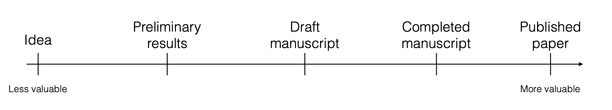
People work towards a final published product, which is the most valuable output of the whole process. The intermediate steps like the code, data, preliminary results, and so on, are less valuable and often hidden from the public. People only see the final published thing.
David argues that we should instead see our work like this:
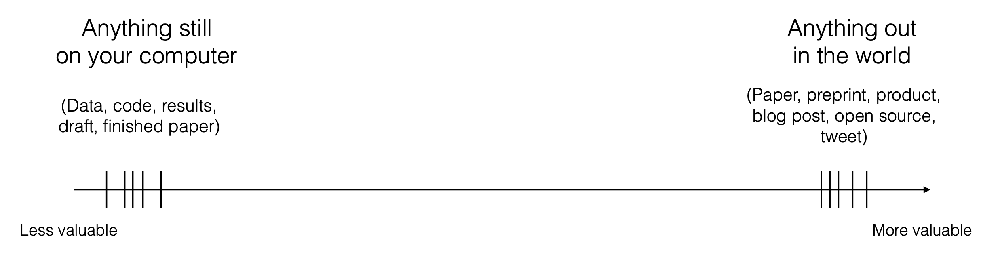
In this paradigm, anything on your computer and only accessible by you isn’t that valuable. Anything you make accessible to the public online—including all the intermediate stuff like code, data, and preliminary results, in addition to the final product—is incredibly valuable. The world can benefit from neat code tricks you stumble on while making graphs; the world can benefit from new data sources you find or your way of processing data; the world can benefit from a toy example of a new method you read about in some paper, even if the actual code you write to play around with the method never makes it into any published paper. It’s all useful to the broader community of researchers.
Public work also builds community norms—if more people share their behind-the-scenes work, it encourages others to do the same and engage with it and improve it (see this super detailed and helpful comment with corrections to my previous post, for example!).
Public work is also valuable for another more selfish reason. Building an online presence with a wide readership is hard, and my little blog post contributions aren’t famous or anything—they’re just sitting out here in a tiny corner of the internet. But these guides have been indispensable for me. They’ve allowed me to work through and understand tricky statistical and programming concepts, and then have allowed me to come back to them months later and remember how they work. This whole blog is primarily a resource for future me.
So here’s yet another blog post that is hopefully potentially useful for the general public, but that is definitely useful for future me.
In a few of my ongoing research projects, I’m working with non-linear regression models, and I’ve been struggling to interpret their results. In my past few posts (like this one on hurdle models, or this one on multilevel panel data, or this one on beta and zero-inflated models), I’ve explored a bunch of different ways to work with and interpret these more complex models and calculate their marginal effects. I even wrote a guide to calculating average marginal effects for multilevel models. TURNS OUT™, though, that I’ve actually been a bit wrong about my terminology for all the marginal effects I’ve talked about in those posts.
Part of the reason for this wrongness is because there are so many quasi-synonyms for the idea of “marginal effects” and people seem to be pretty loosey goosey about what exactly they’re referring to. There are statistical effects, marginal effects, marginal means, marginal slopes, conditional effects, conditional marginal effects, marginal effects at the mean, and many other similarly-named ideas. There are also regression coefficients and estimates, which have marginal effects vibes, but may or may not actually be marginal effects depending on the complexity of the model.
The question of what the heck “marginal effects” are has plagued me for a while. In October 2021 I publicly announced that I would finally buckle down and figure out their definitions and nuances:
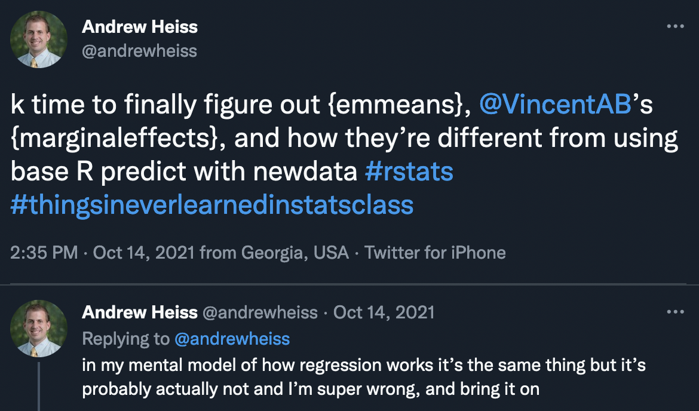
And then I didn’t.
So here I am, 7 months later, publicly figuring out the differences between regression coefficients, regression predictions, marginaleffects, emmeans, marginal slopes, average marginal effects, marginal effects at the mean, and all these other “marginal” things that researchers and data scientists use.
This guide is highly didactic and slowly builds up the concept of marginal effects as slopes and partial derivatives. The tl;dr section at the end has a useful summary of everything here, with a table showing all the different approaches to marginal effects with corresponding marginaleffects and emmeans code, as well as some diagrams outlining the two packages’ different approaches to averaging. Hopefully it’s useful—it is for me!
Let’s get started by looking at some lines and slopes (after loading a bunch of packages and creating some useful little functions).
# Load packages
# ---------------
library(tidyverse) # dplyr, ggplot2, and friends
library(broom) # Convert models to data frames
library(marginaleffects) # Marginal effects stuff
library(emmeans) # Marginal effects stuff
# Visualization-related packages
library(ggtext) # Add markdown/HTML support to text in plots
library(glue) # Python-esque string interpolation
library(scales) # Functions to format numbers nicely
library(gganimate) # Make animated plots
library(patchwork) # Combine ggplots
library(ggrepel) # Make labels that don't overlap
library(MetBrewer) # Artsy color palettes
# Data-related packages
library(palmerpenguins) # Penguin data
library(WDI) # Get data from the World Bank's API
library(countrycode) # Map country codes to different systems
library(vdemdata) # Use data from the Varieties of Democracy (V-Dem) project
# Install vdemdata from GitHub, not CRAN
# devtools::install_github("vdeminstitute/vdemdata")
# Helpful functions
# -------------------
# Format numbers in pretty ways
nice_number <- label_number(style_negative = "minus", accuracy = 0.01)
nice_p <- label_pvalue(prefix = c("p < ", "p = ", "p > "))
# Point-slope formula: (y - y1) = m(x - x1)
find_intercept <- function(x1, y1, slope) {
intercept <- slope * (-x1) + y1
return(intercept)
}
# Visualization settings
# ------------------------
# Custom ggplot theme to make pretty plots
# Get IBM Plex Sans Condensed at https://fonts.google.com/specimen/IBM+Plex+Sans+Condensed
theme_mfx <- function() {
theme_minimal(base_family = "IBM Plex Sans Condensed") +
theme(panel.grid.minor = element_blank(),
plot.background = element_rect(fill = "white", color = NA),
plot.title = element_text(face = "bold"),
axis.title = element_text(face = "bold"),
strip.text = element_text(face = "bold"),
strip.background = element_rect(fill = "grey80", color = NA),
legend.title = element_text(face = "bold"))
}
# Make labels use IBM Plex Sans by default
update_geom_defaults("label",
list(family = "IBM Plex Sans Condensed"))
update_geom_defaults(ggtext::GeomRichText,
list(family = "IBM Plex Sans Condensed"))
update_geom_defaults("label_repel",
list(family = "IBM Plex Sans Condensed"))
# Use the Johnson color palette
clrs <- met.brewer("Johnson")What does “marginal” even mean in the first place?
Put as simply as possible, in the world of statistics, “marginal” means “additional,” or what happens to outcome variable \(y\) when explanatory variable \(x\) changes a little.
To find out precisely how much things change, we need to use calculus.
Oh no.
Super quick crash course in differential calculus (it’s not scary, I promise!)
I haven’t taken a formal calculus class since my senior year of high school in 2002. I enjoyed it a ton and got the highest score on the AP Calculus BC test, which gave me enough college credits to not need it as an undergraduate, given that I majored in Middle East Studies, Arabic, and Italian. I figured I’d never need to think about calculus every again. lol.
In my first PhD-level stats class in 2012, the professor cancelled class for the first month and assigned us all to go relearn calculus with Khan Academy, since I wasn’t alone in my unlearning of calculus. Even after that crash course refresher, I don’t really ever use it in my own research. When I do, I only use it to think about derivatives and slopes, since those are central to statistics.
Calculus can be boiled down to two forms: (1) differential calculus is all about finding rates of changes by calculating derivatives, or slopes, while (2) integral calculus is all about finding total amounts, or areas, by adding infinitesimally small things together. According to the fundamental theorem of calculus, these two types are actually the inverse of each other—you can find the total area under a curve based on its slope, for instance. Super neat stuff. If you want a cool accessible refresher / history of all this, check out Steven Strogatz’s Infinite Powers: How Calculus Reveals the Secrets of the Universe—it’s great.
In the world of statistics and marginal effects all we care about are slopes, which are solely a differential calculus idea.
Let’s pretend we have a line that shows the relationship between \(x\) and \(y\) that’s defined with an equation using the form \(y = mx + b\), where \(m\) is the slope and \(b\) is the y-intercept. We can plot it with ggplot using the helpful geom_function() function:
\[ y = 2x - 1 \]
# y = 2x - 1
a_line <- function(x) (2 * x) - 1
ggplot() +
geom_vline(xintercept = 0, size = 0.5, color = "grey50") +
geom_hline(yintercept = 0, size = 0.5, color = "grey50") +
geom_function(fun = a_line, size = 1, color = clrs[2]) +
scale_x_continuous(breaks = -2:5, limits = c(-1, 3)) +
scale_y_continuous(breaks = -3:9) +
annotate(geom = "segment", x = 1, y = 1.3, xend = 1, yend = 3, color = clrs[4], size = 0.5) +
annotate(geom = "segment", x = 1, y = 3, xend = 1.8, yend = 3, color = clrs[4], size = 0.5) +
annotate(geom = "richtext", x = 1.4, y = 3.1, label = "Slope: **2**", vjust = 0) +
labs(x = "x", y = "y") +
coord_equal() +
theme_mfx()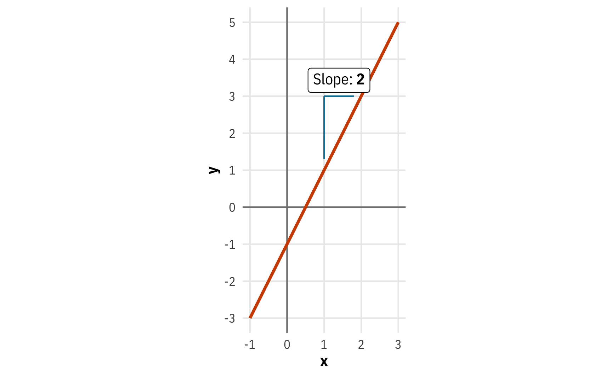
The line crosses the y-axis at -1, and its slope, or its \(\frac{\text{rise}}{\text{run}}\) is 2, or \(\frac{2}{1}\), meaning that we go up two units and to the right one unit.
Importantly, the slope shows the relationship between \(x\) and \(y\). If \(x\) increases by 1 unit, \(y\) increases by 2: when \(x\) is 1, \(y\) is 1; when \(x\) is 2, \(y\) is 3, and so on. We can call this the marginal effect, or the change in \(y\) that results from one additional \(x\).
We can think about this slope using calculus language too. In differential calculus, slopes are called derivatives and they represent the change in \(y\) that results from changes in \(x\), or \(\frac{dy}{dx}\). The \(d\) here refers to an infinitesimal change in the values of \(x\) and \(y\), rather than a one-unit change like we think of when looking at the slope as \(\frac{\text{rise}}{\text{run}}\). Even more technically, the \(d\) indicates that we’re working with the total derivative, since there’s only one variable (\(x\)) to consider. If we had more variables (like \(y = 2x + 3z -1\)), we would need to find the partial derivative for \(x\), holding \(z\) constant, and we’d write the derivative with a \(\partial\) symbol instead: \(\frac{\partial y}{\partial x}\). More on that in a bit.
By plotting this line, we can figure out \(\frac{dy}{dx}\) visually—the slope is 2. But we can figure it out mathematically too. Differential calculus is full of fancy tricks and rules of thumb for figuring out derivatives, like the power rule, the chain rule, and so on. The easiest one for me to remember is the power rule, which says you can find the slope of a variable like \(x\) by decreasing its exponent by 1 and multiplying that exponent by the variable’s coefficient. All constants (terms without \(x\)) disappear.
\[ \begin{aligned} y &= 2x - 1 \\ &= 2x^1 - 1 \\ \frac{dy}{dx}&= (1 \times 2) x^0 \\ &= 2 \end{aligned} \]
(My secret is that I only know the power rule and so I avoid calculus at all costs and either use R or use Wolfram Alpha—go to Wolfram Alpha, type in derivative y = 2x - 1 and you’ll see some magic.)
We thus know that the derivative of \(y = 2x - 1\) is \(\frac{dy}{dx} = 2\). At every point on this line, the slope is 2—it never changes.
slope_annotations <- tibble(x = c(-0.25, 1.2, 2.4)) |>
mutate(y = a_line(x)) |>
mutate(nice_y = y + 1) |>
mutate(nice_label = glue("x: {x}; y: {y}<br>",
"Slope (dy/dx): **{2}**"))
ggplot() +
geom_vline(xintercept = 0, size = 0.5, color = "grey50") +
geom_hline(yintercept = 0, size = 0.5, color = "grey50") +
geom_function(fun = a_line, size = 1, color = clrs[2]) +
geom_point(data = slope_annotations, aes(x = x, y = y)) +
geom_richtext(data = slope_annotations,
aes(x = x, y = y, label = nice_label),
nudge_y = 0.5) +
scale_x_continuous(breaks = -2:5, limits = c(-1, 3)) +
scale_y_continuous(breaks = -3:9) +
labs(x = "x", y = "y") +
coord_equal() +
theme_mfx()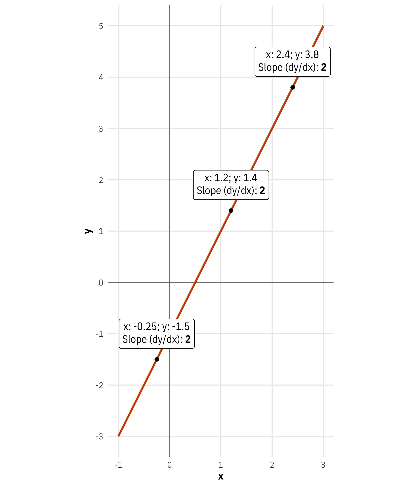
The power rule seems super basic for equations with non-exponentiated \(x\)s, but it’s really helpful with more complex equations, like this parabola \(y = -0.5x^2 + 5x + 5\):
# y = -0.5x^2 + 5x + 5
a_parabola <- function(x) (-0.5 * x^2) + (5 * x) + 5
ggplot() +
geom_vline(xintercept = 0, size = 0.5, color = "grey50") +
geom_hline(yintercept = 0, size = 0.5, color = "grey50") +
geom_function(fun = a_parabola, size = 1, color = clrs[2]) +
xlim(-5, 15) +
labs(x = "x", y = "y") +
coord_cartesian(ylim = c(-5, 20)) +
theme_mfx()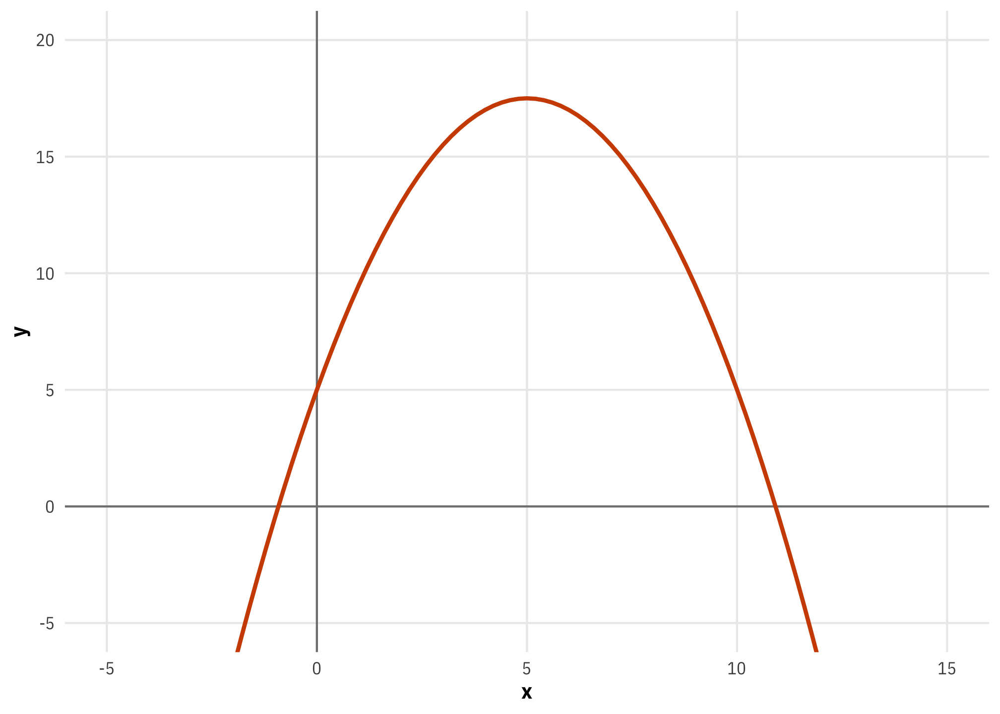
What’s interesting here is that there’s no longer a single slope for the whole function. The steepness of the slope across a range of \(x\)s depends on whatever \(x\) currently is. The curve is steeper at really low and really high values of \(x\) and it is shallower around 5 (and it is completely flat when \(x\) is 5).
If we apply the power rule to the parabola formula we can find the exact slope:
\[ \begin{aligned} y &= -0.5x^2 + 5x^1 + 5 \\ \frac{dy}{dx} &= (2 \times -0.5) x + (1 \times 5) x^0 \\ &= -x + 5 \end{aligned} \]
When \(x\) is 0, the slope is 5 (\(-0 + 5\)); when \(x\) is 8, the slope is −3 (\(-8 + 5\)), and so on. We can visualize this if we draw some lines tangent to some different points on the equation. The slope of each of these tangent lines represents the instantaneous slope of the parabola at each \(x\) value.
# dy/dx = -x + 5
parabola_slope <- function(x) (-x) + 5
slope_annotations <- tibble(
x = c(0, 3, 8)
) |>
mutate(y = a_parabola(x),
slope = parabola_slope(x),
intercept = find_intercept(x, y, slope),
nice_slope = glue("Slope (dy/dx)<br><span style='font-size:12pt;color:{clrs[4]}'>**{slope}**</span>"))
ggplot() +
geom_vline(xintercept = 0, size = 0.5, color = "grey50") +
geom_hline(yintercept = 0, size = 0.5, color = "grey50") +
geom_function(fun = a_parabola, size = 1, color = clrs[2]) +
geom_abline(data = slope_annotations,
aes(slope = slope, intercept = intercept),
size = 0.5, color = clrs[4], linetype = "21") +
geom_point(data = slope_annotations, aes(x = x, y = y),
size = 3, color = clrs[4]) +
geom_richtext(data = slope_annotations, aes(x = x, y = y, label = nice_slope),
nudge_y = 2) +
xlim(-5, 15) +
labs(x = "x", y = "y") +
coord_cartesian(ylim = c(-5, 20)) +
theme_mfx()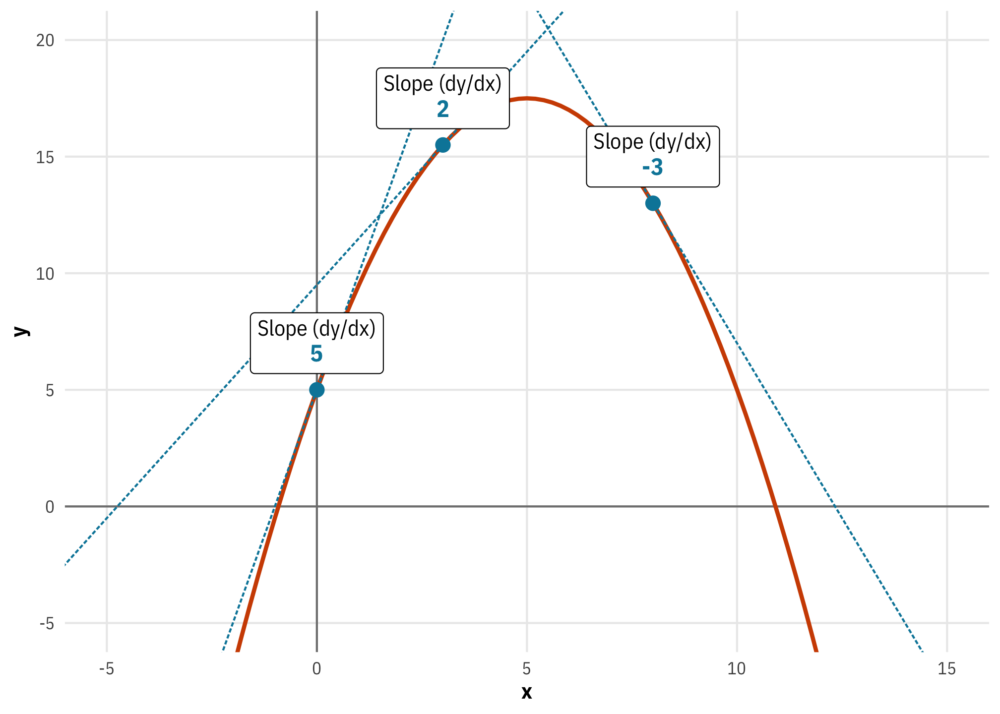
And here’s an animation of what the slope looks like across a whole range of \(x\)s. Neat!
For the sake of space, I didn’t include the code for this here, but you can see how I made this animation with gganimate at the R Markdown file for this post at GitHub.
Marginal things in economics
In the calculus world, the term “marginal” isn’t used all that often. Instead they talk about derivatives. But in the end, all these marginal/derivative things are just slopes.
Before looking at how this applies to the world of statistics, let’s look at a quick example from economics, since economists also use the word “marginal” to refer to slopes. My first exposure to the word “marginal” meaning “changes in things” wasn’t actually in the world of statistics, but in economics. I took my first microeconomics class as a first-year MPA student in 2010 (and hated it; ironically I teach it now 🤷).
One common question in microeconomics relates to how people maximize their happiness, or utility, under budget constraints (see here for an R-based example). Economists imagine that people have utility functions in their heads that take inputs and convert them to utility (or happiness points). For instance, let’s pretend that the happiness/utility (\(u\)) you get from the number of cookies you eat (\(x\)) is defined like this:
\[ u = -0.5x^2 + 5x \]
Here’s what that looks like:
# u = -0.5x^2 + 5x
u_cookies <- function(x) (-0.5 * x^2) + (5 * x)
ggplot() +
geom_vline(xintercept = 0, size = 0.5, color = "grey50") +
geom_hline(yintercept = 0, size = 0.5, color = "grey50") +
geom_function(fun = u_cookies, size = 1, color = clrs[2]) +
scale_x_continuous(breaks = seq(0, 12, 2), limits = c(0, 12)) +
labs(x = "Cookies", y = "Utility (happiness points)") +
theme_mfx()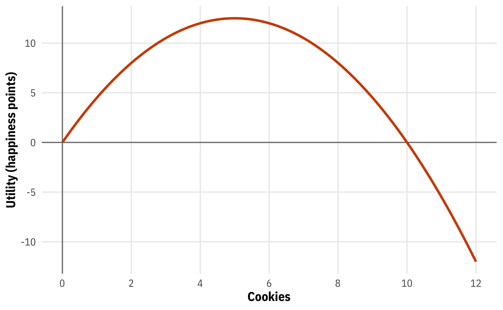
This parabola represents your total utility from cookies. Eat 1 cookie, get 4.5 happiness points; eat 3 cookies, get 10.5 points; eat 6, get 12 points; and so on.
The marginal utility, on the other hand, tells how how much more happiness you’d get from eating one more cookie. If you’re currently eating 1, how many more happiness points would you get by moving to 2? If if you’re eating 7, what would happen to your happiness if you moved to 8? We can figure this out by looking at the slope of the parabola, which will show us the instantaneous rate of change, or marginal utility, for any number of cookies.
Power rule time! (or type derivative -0.5x^2 + 5x at Wolfram Alpha)
\[ \begin{aligned} u &= -0.5x^2 + 5x \\ \frac{du}{dx} &= (2 \times -0.5) x^1 + 5x^0 \\ &= -x + 5 \end{aligned} \]
Let’s plot this really quick too:
# du/dx = -x + 5
mu_cookies <- function(x) -x + 5
ggplot() +
geom_vline(xintercept = 0, size = 0.5, color = "grey50") +
geom_hline(yintercept = 0, size = 0.5, color = "grey50") +
geom_vline(xintercept = 5, size = 0.5,
linetype = "21", color = clrs[3]) +
geom_function(fun = mu_cookies, size = 1, color = clrs[5]) +
scale_x_continuous(breaks = seq(0, 12, 2), limits = c(0, 12)) +
labs(x = "Cookies", y = "Marginal utility (additional happiness points)") +
theme_mfx()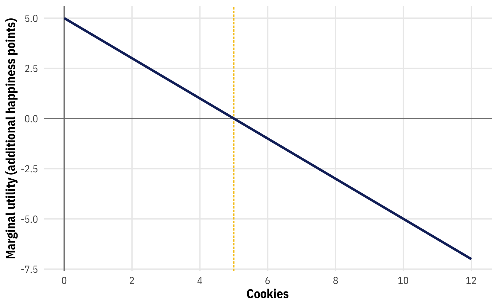
If you’re currently eating 1 cookie and you grab another one, you’ll gain 4 extra or marginal happiness points. If you’re eating 6 and you grab another one, you’ll actually lose some happiness—the marginal utility at 6 is -1. If you’re an economist who wants to maximize your happiness, you should eat the number of cookies where the extra happiness you’d get is 0, or where marginal utility is 0:
\[ \begin{aligned} \frac{du}{dx} &= -x + 5 \\ 0 &= -x + 5 \\ x &= 5 \end{aligned} \]
Eat 5 cookies, maximize your happiness. Eat any more and you’ll start getting disutility (like a stomachache). This is apparent in the marginal utility plot too. All the values of marginal utility to the left of 5 are positive; all the values to the right of 5 are negative. Economists call this decreasing marginal utility.
This relationship between total utility and marginal utility is even more apparent if we look at both simultaneously (for fun I included the second derivative (\(\frac{d^2u}{dx^2}\)), or the slope of the first derivative, in the marginal utility panel):
Again, I omitted the code for this here, but you can see it at GitHub.
What about marginal things in statistics?
Marginal utility, marginal revenue, marginal costs, and all those other marginal things are great for economists, but how does this “marginal” concept relate to statistics? Is it the same?
Yep! Basically!
At its core, regression modeling in statistics is all about fancy ways of finding averages and fancy ways of drawing lines. Even if you’re doing non-regression things like t-tests, those are technically still just regression behind the scenes.
Statistics is all about lines, and lines have slopes, or derivatives. These slopes represent the marginal changes in an outcome. As you move an independent/explanatory variable \(x\), what happens to the dependent/outcome variable \(y\)?
Regression, sliders, switches, and mixing boards
Before getting into the mechanics of statistical marginal effects, it’s helpful to review what exactly regression coefficients are doing in statistical models, especially when dealing with both continuous and categorical explanatory variables.
When I teach statistics to my students, my favorite analogy for regression is to think of sliders and switches. Sliders represent continuous variables: as you move them up and down, something gradual happens to the resulting light. Switches represent categorical variables: as you turn them on and off, there are larger overall changes to the resulting light.
Let’s look at some super tiny quick models to illustrate this, using data from palmerpenguins:
penguins <- penguins |> drop_na()
model_slider <- lm(body_mass_g ~ flipper_length_mm, data = penguins)
tidy(model_slider)
## # A tibble: 2 × 5
## term estimate std.error statistic p.value
## <chr> <dbl> <dbl> <dbl> <dbl>
## 1 (Intercept) -5872. 310. -18.9 1.18e- 54
## 2 flipper_length_mm 50.2 1.54 32.6 3.13e-105
model_switch <- lm(body_mass_g ~ species, data = penguins)
tidy(model_switch)
## # A tibble: 3 × 5
## term estimate std.error statistic p.value
## <chr> <dbl> <dbl> <dbl> <dbl>
## 1 (Intercept) 3706. 38.1 97.2 6.88e-245
## 2 speciesChinstrap 26.9 67.7 0.398 6.91e- 1
## 3 speciesGentoo 1386. 56.9 24.4 1.01e- 75Disregard the intercept for now and just look at the coefficients for flipper_length_mm and species*. Flipper length is a continuous variable, so it’s a slider—as flipper length increases by 1 mm, penguin body mass increases by 50 grams. Slide it up more and you’ll see a bigger increase: if flipper length increases by 10 mm, body mass should increase by 500 grams. Slide it down for fun too! If flipper length decreases by 1 mm, body mass decreases by 50 grams. Imagine it like a sliding light switch.
Species, on the other hand, is a switch. There are three possible values here: Adelie, Chinstrap, and Gentoo. The base case in the results here is Adelie since it comes fist alphabetically. The coefficients for speciesChinstrap and speciesGentoo aren’t sliders—you can’t talk about one-unit increases in Gentoo-ness or Chinstrap-ness. Instead, the values show what happens in relation to the average weight of Adelie penguins if you flip the Chinstrap or Gentoo switch. Chinstrap penguins are 29 grams heavier than Adelie penguins on average, while the chonky Gentoo penguins are 1.4 kg heavier than Adellie penguins. With these categorical coefficients, we’re flipping a switch on and off: Adelie vs. Chinstrap and Adelie vs. Gentoo.
This slider and switch analogy holds when thinking about multiple regression too, though we need to think of lots of sliders and switches, like in an audio mixer board:
With a mixer board, we can move many different sliders up and down and use different combinations of switches, all of which ultimately influence the audio output.
Let’s make a more complex mixer-board-esque regression model with multiple continuous (slider) and categorical (switch) explanatory variables:
model_mixer <- lm(body_mass_g ~ flipper_length_mm + bill_depth_mm + species + sex,
data = penguins)
tidy(model_mixer)
## # A tibble: 6 × 5
## term estimate std.error statistic p.value
## <chr> <dbl> <dbl> <dbl> <dbl>
## 1 (Intercept) -1212. 568. -2.13 3.36e- 2
## 2 flipper_length_mm 17.5 2.87 6.12 2.66e- 9
## 3 bill_depth_mm 74.4 19.7 3.77 1.91e- 4
## 4 speciesChinstrap -78.9 45.5 -1.73 8.38e- 2
## 5 speciesGentoo 1154. 119. 9.73 8.02e-20
## 6 sexmale 435. 44.8 9.72 8.79e-20Interpreting these coefficients is a little different now, since we’re working with multiple moving parts. In regular stats class, you’ve probably learned to say something like “Holding all other variables constant, a 1 mm increase in flipper length is associated with a 17.5 gram increase in body mass, on average” (slider) or “Holding all other variables constant, Chinstrap penguins are 79 grams lighter than Adelie penguins, on average” (switch).
This idea of “holding everything constant” though can be tricky to wrap your head around. Imagining this model like a mixer board can help, though. Pretend that you set the bill depth slider to some value (0, the average, whatever), you flip the Chinstrap and Gentoo switches off, you flip the male switch off, and then you slide only the flipper length switch up and down. You’d be looking at the marginal effect of flipper length for female Adelie penguins with an average (or 0 or whatever) length of bill depth. Stop moving the flipper length slider and start moving the bill depth slider and you’ll see the marginal effect of bill depth for female Adelie penguins. Flip on the male switch and you’ll see the marginal effect of bill depth for male Adelie penguins. Flip on the Gentoo switch and you’ll see the marginal effect of bill depth for male Gentoo penguins. And so on.
In calculus, if you have a model like model_slider with just one continuous variable, the slope or derivative of that variable is the total derivative, or \(\frac{dy}{dx}\). If you have a model like model_mixer with lots of other variables, the slope or derivative of any of the individual explanatory variables is the partial derivative, or \(\frac{\partial y}{\partial x}\), where all other variables are held constant.
What are marginal effects?
Oops. When talking about these penguin regression results up there ↑ I used the term “marginal effect,” but we haven’t officially defined it in the statistics world yet. It’s tricky to do that, though, because there are so many synonyms and near synonyms for the idea of a statistical effect, like marginal effect, marginal mean, marginal slope, conditional effect, conditional marginal effect, and so on.
Formally defined, a marginal effect is a partial derivative from a regression equation. It’s the instantaneous slope of one of the explanatory variables in a model, with all the other variables held constant. If we continue with the mixing board analogy, it represents what would happen to the resulting audio levels if we set all sliders and switches to some stationary level and we moved just one slider up a tiny amount.
However, in practice, people use the term “marginal effect” to mean a lot more than just a partial derivative. For instance, in a randomized controlled trial, the difference in group means between the treatment and control groups is often called a marginal effect (and sometimes called a conditional effect, or even a conditional marginal effect). The term is also often used to talk about other group differences, like differences in penguin weights across species.
In my mind, all these quasi-synonymous terms represent the same idea of a statistical effect, or what would happen to an outcome \(y\) if one of the explanatory variables \(x\) (be it continuous, categorical, or whatever) were different. The more precise terms like marginal effect, conditional effect, marginal mean, and so on, are variations on this theme. This is similar to how a square is a rectangle, but a rectangle is not a square—they’re all super similar, but with minor subtle differences depending on the type of \(x\) we’re working with:
- Marginal effect: the statistical effect for continuous explanatory variables; the partial derivative of a variable in a regression model; the effect of a single slider
- Conditional effect or group contrast: the statistical effect for categorical explanatory variables; the difference in means when a condition is on vs. when it is off; the effect of a single switch
Slopes and marginal effects
Let’s look at true marginal effects, or the partial derivatives of continuous variables in a model (or sliders, in our slider/switch analogy). For the rest of this post, we’ll move away from penguins and instead look at some cross-national data about the relationship between public sector corruption, the legal requirement to disclose donations to political campaigns, and respect for human rights, since that’s all more related to what I do in my own research (I know nothing about penguins). We’ll explore two different political science/policy questions:
- What is the relationship between a country’s respect for civil liberties and its level of public sector corruption? Do countries that respect individual human rights tend to have less corruption too?
- Does a country’s level of public sector corruption influence whether it has laws that require campaign finance disclosure? How does corruption influence a country’s choice to be electorally transparent?
We’ll use data from the World Bank and from the Varieties of Democracy project and just look at one year of data (2020) so we don’t have to worry about panel data. There’s a great R package for accessing V-Dem data without needing to download it manually from their website, but it’s not on CRAN—it has to be installed from GitHub.
V-Dem and the World Bank have hundreds of different variables, but we only need a few, and we’ll make a few adjustments to the ones we do need. Here’s what we’ll do:
Main continuous outcome and continuous explanatory variable: Public sector corruption index (
v2x_pubcorrin V-Dem). This is a 0–1 scale that measures…To what extent do public sector employees grant favors in exchange for bribes, kickbacks, or other material inducements, and how often do they steal, embezzle, or misappropriate public funds or other state resources for personal or family use?
Higher values represent worse corruption.
Main binary outcome: Disclosure of campaign donations (
v2eldonate_ordin V-Dem). This is an ordinal variable with these possible values:- 0: No. There are no disclosure requirements.
- 1: Not really. There are some, possibly partial, disclosure requirements in place but they are not observed or enforced most of the time.
- 2: Ambiguous. There are disclosure requirements in place, but it is unclear to what extent they are observed or enforced.
- 3: Mostly. The disclosure requirements may not be fully comprehensive (some donations not covered), but most existing arrangements are observed and enforced.
- 4: Yes. There are comprehensive requirements and they are observed and enforced almost all the time.
For the sake of simplicity, we’ll collapse this into a binary variable. Countries have disclosure laws if they score a 3 or a 4; they don’t if they score a 0, 1, or 2.
Other continuous explanatory variables:
- Electoral democracy index, or polyarchy (
v2x_polyarchyin V-Dem): a continuous variable measured from 0–1 with higher values representing greater achievement of democratic ideals - Civil liberties index (
v2x_civlibin V-Dem): a continuous variable measured from 0–1 with higher values representing better respect for human rights and civil liberties - Log GDP per capita (
NY.GDP.PCAP.KDat the World Bank): GDP per capita in constant 2015 USD
- Electoral democracy index, or polyarchy (
Region: V-Dem provides multiple regional variables with varying specificity (19 different regions, 10 different regions, and 6 different regions). We’ll use the 6-region version (
e_regionpol_6C) for simplicity here:- 1: Eastern Europe and Central Asia (including Mongolia)
- 2: Latin America and the Caribbean
- 3: The Middle East and North Africa (including Israel and Turkey, excluding Cyprus)
- 4: Sub-Saharan Africa
- 5: Western Europe and North America (including Cyprus, Australia and New Zealand)
- 6: Asia and Pacific (excluding Australia and New Zealand)
# Get data from the World Bank's API
wdi_raw <- WDI(country = "all",
indicator = c(population = "SP.POP.TOTL",
gdp_percapita = "NY.GDP.PCAP.KD"),
start = 2000, end = 2020, extra = TRUE)
# Clean up the World Bank data
wdi_2020 <- wdi_raw |>
filter(region != "Aggregates") |>
filter(year == 2020) |>
mutate(log_gdp_percapita = log(gdp_percapita)) |>
select(-region, -status, -year, -country, -lastupdated, -lending)
# Get data from V-Dem and clean it up
vdem_2020 <- vdem %>%
select(country_name, country_text_id, year, region = e_regionpol_6C,
disclose_donations_ord = v2eldonate_ord,
public_sector_corruption = v2x_pubcorr,
polyarchy = v2x_polyarchy, civil_liberties = v2x_civlib) %>%
filter(year == 2020) %>%
mutate(disclose_donations = disclose_donations_ord >= 3,
disclose_donations = ifelse(is.na(disclose_donations), FALSE, disclose_donations)) %>%
# Scale these up so it's easier to talk about 1-unit changes
mutate(across(c(public_sector_corruption, polyarchy, civil_liberties), ~ . * 100)) |>
mutate(region = factor(region,
labels = c("Eastern Europe and Central Asia",
"Latin America and the Caribbean",
"Middle East and North Africa",
"Sub-Saharan Africa",
"Western Europe and North America",
"Asia and Pacific")))
# Combine World Bank and V-Dem data into a single dataset
corruption <- vdem_2020 |>
left_join(wdi_2020, by = c("country_text_id" = "iso3c")) |>
drop_na(gdp_percapita)
glimpse(corruption)
## Rows: 168
## Columns: 17
## $ country_name <chr> "Mexico", "Suriname", "Sweden", "Switzerland", "Ghana",…
## $ country_text_id <chr> "MEX", "SUR", "SWE", "CHE", "GHA", "ZAF", "JPN", "MMR",…
## $ year <dbl> 2020, 2020, 2020, 2020, 2020, 2020, 2020, 2020, 2020, 2…
## $ region <fct> Latin America and the Caribbean, Latin America and the …
## $ disclose_donations_ord <dbl> 3, 1, 2, 0, 2, 1, 3, 2, 3, 2, 2, 0, 3, 3, 4, 3, 4, 2, 1…
## $ public_sector_corruption <dbl> 48.8, 24.8, 1.3, 1.4, 65.2, 57.1, 3.7, 36.8, 70.6, 71.2…
## $ polyarchy <dbl> 64.7, 76.1, 90.8, 89.4, 72.0, 70.3, 83.2, 43.6, 26.2, 4…
## $ civil_liberties <dbl> 71.2, 87.7, 96.9, 94.8, 90.4, 82.2, 92.8, 56.9, 43.0, 8…
## $ disclose_donations <lgl> TRUE, FALSE, FALSE, FALSE, FALSE, FALSE, TRUE, FALSE, T…
## $ iso2c <chr> "MX", "SR", "SE", "CH", "GH", "ZA", "JP", "MM", "RU", "…
## $ population <dbl> 1.29e+08, 5.87e+05, 1.04e+07, 8.64e+06, 3.11e+07, 5.93e…
## $ gdp_percapita <dbl> 8923, 7530, 51542, 85685, 2021, 5659, 34556, 1587, 9711…
## $ capital <chr> "Mexico City", "Paramaribo", "Stockholm", "Bern", "Accr…
## $ longitude <chr> "-99.1276", "-55.1679", "18.0645", "7.44821", "-0.20795…
## $ latitude <chr> "19.427", "5.8232", "59.3327", "46.948", "5.57045", "-2…
## $ income <chr> "Upper middle income", "Upper middle income", "High inc…
## $ log_gdp_percapita <dbl> 9.10, 8.93, 10.85, 11.36, 7.61, 8.64, 10.45, 7.37, 9.18…Let’s start off by looking at the effect of civil liberties on public sector corruption by using a really simple model with one explanatory variable:
plot_corruption <- corruption |>
mutate(highlight = civil_liberties == min(civil_liberties) |
civil_liberties == max(civil_liberties))
ggplot(plot_corruption, aes(x = civil_liberties, y = public_sector_corruption)) +
geom_point(aes(color = highlight)) +
stat_smooth(method = "lm", formula = y ~ x, size = 1, color = clrs[1]) +
geom_label_repel(data = filter(plot_corruption, highlight == TRUE),
aes(label = country_name), seed = 1234) +
scale_color_manual(values = c("grey30", clrs[3]), guide = "none") +
labs(x = "Civil liberties index", y = "Public sector corruption index") +
theme_mfx()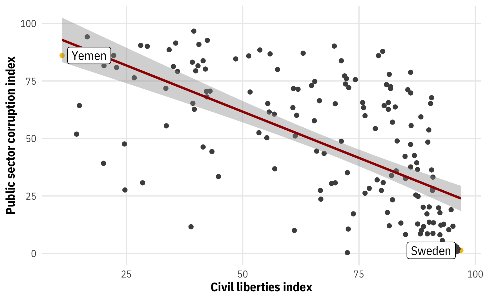
model_simple <- lm(public_sector_corruption ~ civil_liberties,
data = corruption)
tidy(model_simple)
## # A tibble: 2 × 5
## term estimate std.error statistic p.value
## <chr> <dbl> <dbl> <dbl> <dbl>
## 1 (Intercept) 102. 5.72 17.8 2.21e-40
## 2 civil_liberties -0.805 0.0779 -10.3 1.27e-19We have a nice fitted OLS line here with uncertainty around it. What’s the marginal effect of civil liberties on public sector corruption? What kind of calculus and math do we need to do to find it? Not much, happily!
In general, we have a regression formula here that looks a lot like the \(y = mx + b\) stuff we were using before, only now the intercept \(b\) is \(\beta_0\) and the slope \(m\) is \(\beta_1\). If we use the power rule to find the first derivative of this equation, we’ll see that the slope of the entire line is \(\beta_1\):
\[ \begin{aligned} \operatorname{E}[y \mid x] &= \beta_0 + \beta_1 x \\[4pt] \frac{\partial \operatorname{E}[y \mid x]}{\partial x} &= \beta_1 \end{aligned} \]
If we add actual coefficients from the model into the formula we can see that the \(\beta_1\) coefficient for civil_liberties (−0.80) is indeed the marginal effect:
\[ \begin{aligned} \operatorname{E}[\text{Corruption} \mid \text{Civil liberties}] &= 101.89 + (−0.80 \times \text{Civil liberties}) \\[6pt] \frac{\partial \operatorname{E}[\text{Corruption} \mid \text{Civil liberties}]}{\partial\ \text{Civil liberties}} &= −0.80 \end{aligned} \]
The \(\beta_1\) coefficient by itself is thus enough to tell us what the effect of moving civil liberties around is—it is the marginal effect of civil liberties on public sector corruption. Slide the civil liberties index up by 1 point and public sector corruption will be −0.80 points lower, on average.
Importantly, this is only the case because we’re using simple linear regression without any curvy parts. If your model is completely linear without any polynomials or logs or interaction terms or doesn’t use curvy regression families like logistic or beta regression, you can use individual coefficients as marginal effects.
Let’s see what happens when we add curves. We’ll add a polynomial term, including both civil_liberties and civil_liberties^2 so that we can capture the parabolic shape of the relationship between civil liberties and corruption:
ggplot(plot_corruption, aes(x = civil_liberties, y = public_sector_corruption)) +
geom_point(aes(color = highlight)) +
stat_smooth(method = "lm", formula = y ~ x + I(x^2), size = 1, color = clrs[2]) +
geom_label_repel(data = filter(plot_corruption, highlight == TRUE),
aes(label = country_name), seed = 1234) +
scale_color_manual(values = c("grey30", clrs[3]), guide = "none") +
labs(x = "Civil liberties index", y = "Public sector corruption index") +
theme_mfx()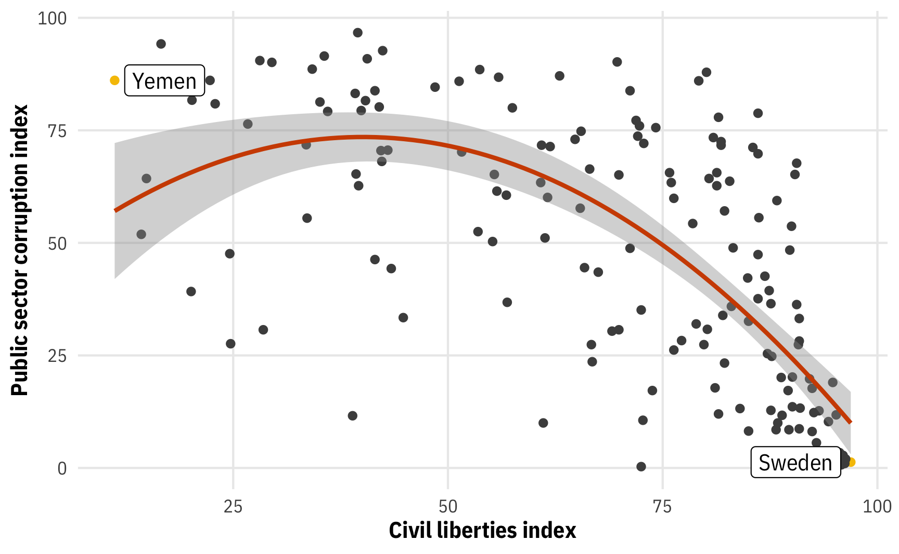
This is most likely not a great model fit in real life, but using the quadratic term here makes a neat curved line, so we’ll go with it for the sake of the example. But don’t, like, make any policy decisions based on this line.
When working with polynomials in regression, the coefficients appear and work a little differently:
model_sq <- lm(public_sector_corruption ~ civil_liberties + I(civil_liberties^2),
data = corruption)
tidy(model_sq)
## # A tibble: 3 × 5
## term estimate std.error statistic p.value
## <chr> <dbl> <dbl> <dbl> <dbl>
## 1 (Intercept) 41.9 11.6 3.60 0.000427
## 2 civil_liberties 1.58 0.419 3.77 0.000230
## 3 I(civil_liberties^2) -0.0197 0.00341 -5.77 0.0000000382We now have two coefficients for civil liberties: \(\beta_1\) and \(\beta_2\). Importantly, we cannot use just one of these to talk about the marginal effect of changing civil liberties. A one-point increase in the civil liberties index is not associated with a 1.58 increase or a −0.02 decrease in corruption. The slope of the fitted line now comprises multiple moving parts: (1) the coefficient for the non-squared term, (2) the coefficient for the squared term, and (3) some value of civil liberties, since the slope isn’t the same across the whole line. The math shows us why and how.
We have terms for both \(x\) and \(x^2\) in our model. To find the derivative, we can use the power rule to get rid of the \(x\) term (\(\beta x^1 \rightarrow (1 \times \beta x^0) \rightarrow \beta\)), but the \(x\) in the \(x^2\) term doesn’t disappear (\(\beta x^2 \rightarrow (2 \times \beta \times x^1) \rightarrow 2 \beta x\)). The slope of the line thus depends on both the βs and the \(x\):
\[ \begin{aligned} \operatorname{E}[y \mid x] &= \beta_0 + \beta_1 x + \beta_2 x^2 \\[4pt] \frac{\partial \operatorname{E}[y \mid x]}{\partial x} &= \beta_1 + 2 \beta_2 x \end{aligned} \]
Here’s what that looks like with the results of our civil liberties and corruption model:
\[ \begin{aligned} \operatorname{E}[\text{Corruption} \mid \text{Civil liberties}] &= 41.86 + (1.58 \times \text{Civil liberties}) + (−0.02 \times \text{Civil liberties}^2) \\[6pt] \frac{\partial \operatorname{E}[\text{Corruption} \mid \text{Civil liberties}]}{\partial\ \text{Civil liberties}} &= 1.58 + (2\times −0.02 \times \text{Civil liberties}) \end{aligned} \]
Because the actual slope depends on the value of civil liberties, we need to plug in different values to get the instantaneous slopes at each value. Let’s plug in 25, 55, and 80, for fun:
# Extract the two civil_liberties coefficients
civ_lib1 <- tidy(model_sq) |> filter(term == "civil_liberties") |> pull(estimate)
civ_lib2 <- tidy(model_sq) |> filter(term == "I(civil_liberties^2)") |> pull(estimate)
# Make a little function to do the math
civ_lib_slope <- function(x) civ_lib1 + (2 * civ_lib2 * x)
civ_lib_slope(c(25, 55, 80))
## [1] 0.594 -0.587 -1.572We have three different slopes now: 0.59, −0.59, and −1.57 for civil liberties of 25, 55, and 80, respectively. We can plot these as tangent lines:
tangents <- model_sq |>
augment(newdata = tibble(civil_liberties = c(25, 55, 80))) |>
mutate(slope = civ_lib_slope(civil_liberties),
intercept = find_intercept(civil_liberties, .fitted, slope)) |>
mutate(nice_label = glue("Civil liberties: {civil_liberties}<br>",
"Fitted corruption: {nice_number(.fitted)}<br>",
"Slope: **{nice_number(slope)}**"))
ggplot(corruption, aes(x = civil_liberties, y = public_sector_corruption)) +
geom_point(color = "grey30") +
stat_smooth(method = "lm", formula = y ~ x + I(x^2), size = 1, se = FALSE, color = clrs[4]) +
geom_abline(data = tangents, aes(slope = slope, intercept = intercept),
size = 0.5, color = clrs[2], linetype = "21") +
geom_point(data = tangents, aes(x = civil_liberties, y = .fitted), size = 4, shape = 18, color = clrs[2]) +
geom_richtext(data = tangents, aes(x = civil_liberties, y = .fitted, label = nice_label), nudge_y = -7) +
labs(x = "Civil liberties index", y = "Public sector corruption index") +
theme_mfx()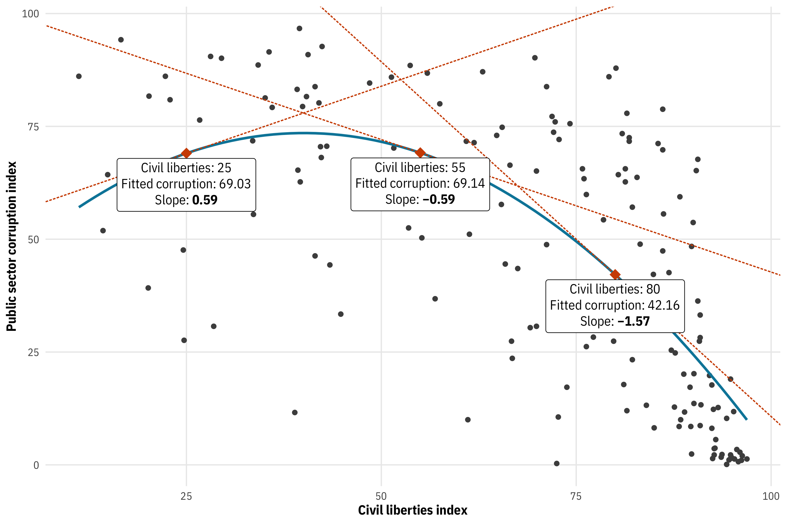
Doing the calculus by hand here is tedious though, especially once we start working with even more covariates in a model. Plus we don’t have any information about uncertainty, like standard errors and confidence intervals. There are official mathy ways to figure those out by hand, but who even wants to do that. Fortunately there are two different packages that let us find marginal slopes automatically, with important differences in their procedures, which we’ll explore in detail below. But before looking at their differences, let’s first see how they work.
First, we can use the marginaleffects() function from marginaleffects to see the slope (the dydx column here) at various levels of civil liberties. We’ll look at the mechanics of this function in more detail in the next section—for now we’ll just plug in our three values of civil liberties and see what happens. We’ll also set the eps argument: behind the scenes, marginaleffects() doesn’t actually do the by-hand calculus of piecing together first derivatives—instead, it calculates the fitted value of corruption when civil liberties is a value, calculates the fitted value of corruption when civil liberties is that same value plus a tiny bit more, and then subtracts them. The eps value controls that tiny amount. In this case, it’ll calculate the predictions for civil_liberties = 25 and civil_liberties = 25.001 and then find the slope of the tiny tangent line between those two points. It’s a neat little mathy trick to avoid calculus.
model_sq |>
marginaleffects(newdata = datagrid(civil_liberties = c(25, 55, 80)),
eps = 0.001)
## rowid type term dydx std.error statistic p.value conf.low conf.high predicted predicted_hi predicted_lo public_sector_corruption civil_liberties eps
## 1 1 response civil_liberties 0.594 0.2527 2.35 1.87e-02 0.0991 1.090 69.0 69.0 69.0 45.8 25 0.001
## 2 2 response civil_liberties -0.587 0.0806 -7.28 3.27e-13 -0.7452 -0.429 69.1 69.1 69.1 45.8 55 0.001
## 3 3 response civil_liberties -1.572 0.1509 -10.42 2.04e-25 -1.8676 -1.276 42.2 42.2 42.2 45.8 80 0.001Second, we can use the emtrends() function from emmeans to also see the slope (the civil_liberties.trend column here) at various levels of civil liberties. The syntax is different (note the delta.var argument instead of eps), but the results are essentially the same:
model_sq |>
emtrends(~ civil_liberties, var = "civil_liberties",
at = list(civil_liberties = c(25, 55, 80)),
delta.var = 0.001)
## civil_liberties civil_liberties.trend SE df lower.CL upper.CL
## 25 0.594 0.2527 165 0.095 1.093
## 55 -0.587 0.0806 165 -0.746 -0.428
## 80 -1.572 0.1509 165 -1.870 -1.274
##
## Confidence level used: 0.95Both marginaleffects() and emtrends() also helpfully provide uncertainty, with standard errors and confidence intervals, with a lot of super fancy math behind the scenes to make it all work. marginaleffects() provides p-values automatically; if you want p-values from emtrends() you need to wrap it in test():
model_sq |>
emtrends(~ civil_liberties, var = "civil_liberties",
at = list(civil_liberties = c(25, 55, 80)),
delta.var = 0.001) |>
test()
## civil_liberties civil_liberties.trend SE df t.ratio p.value
## 25 0.594 0.2527 165 2.350 0.0198
## 55 -0.587 0.0806 165 -7.280 <.0001
## 80 -1.572 0.1509 165 -10.420 <.0001Another neat thing about these more automatic functions is that we can use them to create a marginal effects plot, placing the value of the slope on the y-axis rather than the fitted value of public corruption. marginaleffects helpfully has plot_cme() that will plot the values of dydx across the whole range of civil liberties automatically. Alternatively, if we want full control over the plot, we can use either marginaleffects() or emtrends() to create a data frame that we can plot ourselves with ggplot:
# Automatic plot from marginaleffects::plot_cme()
mfx_marginaleffects_auto <- plot_cme(model_sq,
effect = "civil_liberties",
condition = "civil_liberties") +
labs(x = "Civil liberties", y = "Marginal effect of civil liberties on public sector corruption",
subtitle = "Created automatically with marginaleffects::plot_cme()") +
theme_mfx()
# Piece all the geoms together manually with results from marginaleffects::marginaleffects()
mfx_marginaleffects <- model_sq |>
marginaleffects(newdata = datagrid(civil_liberties =
seq(min(corruption$civil_liberties),
max(corruption$civil_liberties), 0.1)),
eps = 0.001) |>
ggplot(aes(x = civil_liberties, y = dydx)) +
geom_vline(xintercept = 42, color = clrs[3], size = 0.5, linetype = "24") +
geom_ribbon(aes(ymin = conf.low, ymax = conf.high), alpha = 0.1, fill = clrs[1]) +
geom_line(size = 1, color = clrs[1]) +
labs(x = "Civil liberties", y = "Marginal effect of civil liberties on public sector corruption",
subtitle = "Calculated with marginaleffects()") +
theme_mfx()
# Piece all the geoms together manually with results from emmeans::emtrends()
mfx_emtrends <- model_sq |>
emtrends(~ civil_liberties, var = "civil_liberties",
at = list(civil_liberties =
seq(min(corruption$civil_liberties),
max(corruption$civil_liberties), 0.1)),
delta.var = 0.001) |>
as_tibble() |>
ggplot(aes(x = civil_liberties, y = civil_liberties.trend)) +
geom_vline(xintercept = 42, color = clrs[3], size = 0.5, linetype = "24") +
geom_ribbon(aes(ymin = lower.CL, ymax = upper.CL), alpha = 0.1, fill = clrs[1]) +
geom_line(size = 1, color = clrs[1]) +
labs(x = "Civil liberties", y = "Marginal effect of civil liberties on public sector corruption",
subtitle = "Calculated with emtrends()") +
theme_mfx()
mfx_marginaleffects_auto | mfx_marginaleffects | mfx_emtrends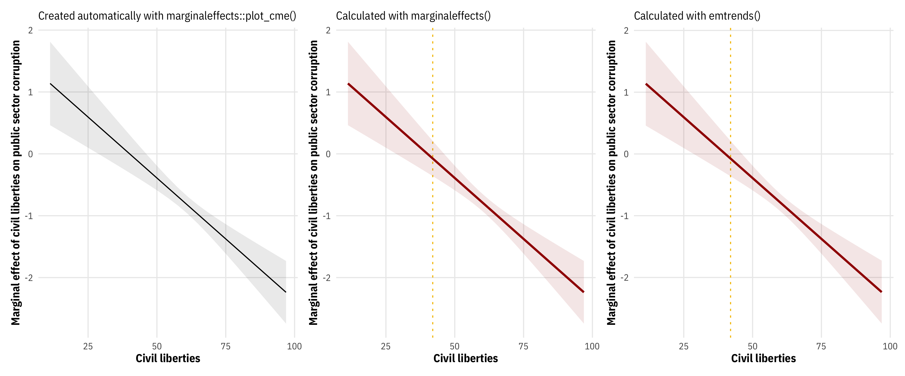
This kind of plot is useful since it shows precisely how the effect changes across civil liberties. The slope is 0 at around 42, positive before that, and negative after that, which—assuming this is a good model and who even knows if that’s true—implies that countries with low levels of respect for civil liberties will see an increase in corruption as civil liberties increases, while countries with high respect for civil liberties will see a decrease in corruption as they improve their respect for human rights.
marginaleffects’s and emmeans’s philosophies of averaging
Finding marginal effects for lines like \(y = 2x - 1\) and \(y = -0.5x^2 + 5x + 5\) with calculus is fairly easy since there’s no uncertainty involved. Finding marginal effects for fitted lines from a regression model, on the other hand, is more complicated because uncertainty abounds. The estimated partial slopes all have standard errors and measures of statistical significance attached to them. The slope of civil liberties at 55 is −0.59, but it could be higher and it could be lower. Could it even possibly be zero? Maybe! (But most likely not; the p-value that we saw above is less than 0.001, so there’s only a sliver of a chance of seeing a slope like −0.59 in a world where it is actually 0ish).
We deal with the uncertainty of these marginal effects by taking averages, which is why we talk about “average marginal effects” when interpreting these effects. So far, marginaleffects::marginaleffects() and emmeans::emtrends() have given identical results. But behind the scenes, these packages take two different approaches to calculating these marginal averages. The difference is very subtle, but incredibly important.
Let’s look at how these two packages calculate their marginal effects by default.
Average marginal effects (the default in marginaleffects)
By default, marginaleffects calculates the average marginal effect (AME) for its partial slopes/coefficients. To do this, it follows a specific process of averaging:
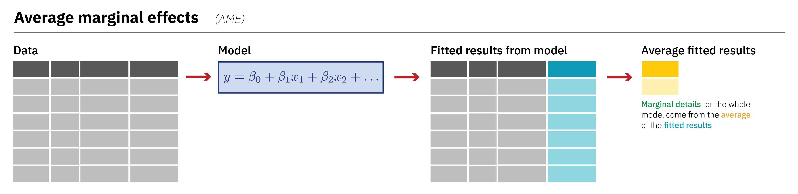
It first plugs each row of the original dataset into the model and generates predictions for each row. It then uses fancy math (i.e. adding 0.001) to calculate the instantaneous slope for each row and stores each individual slope in the dydx column here:
mfx_sq <- marginaleffects(model_sq)
head(mfx_sq)
## rowid type term dydx std.error statistic p.value conf.low conf.high predicted predicted_hi predicted_lo public_sector_corruption civil_liberties civil_liberties.1 eps
## 1 1 response civil_liberties -1.23 0.102 -12.02 2.91e-33 -1.43 -1.03 54.46 54.45 54.46 48.8 71.2 5069 0.00857
## 2 2 response civil_liberties -1.88 0.199 -9.43 3.94e-21 -2.26 -1.49 28.88 28.87 28.88 24.8 87.7 7691 0.00857
## 3 3 response civil_liberties -2.24 0.258 -8.66 4.71e-18 -2.74 -1.73 9.97 9.95 9.97 1.3 96.9 9390 0.00857
## 4 4 response civil_liberties -2.16 0.245 -8.81 1.27e-18 -2.63 -1.68 14.58 14.56 14.58 1.4 94.8 8987 0.00857
## 5 5 response civil_liberties -1.98 0.216 -9.17 4.70e-20 -2.41 -1.56 23.68 23.66 23.68 65.2 90.4 8172 0.00857
## 6 6 response civil_liberties -1.66 0.164 -10.10 5.73e-24 -1.98 -1.34 38.60 38.59 38.60 57.1 82.2 6757 0.00857It finally calculates the average of the dydx column. We can do that ourselves:
mfx_sq |>
group_by(term) |>
summarize(avg_dydx = mean(dydx))
## # A tibble: 1 × 2
## term avg_dydx
## <chr> <dbl>
## 1 civil_liberties -1.17Or we can feed a marginaleffects object to summary() or tidy(), which will calculate the correct uncertainty statistics, like the standard errors:
summary(mfx_sq)
## Term Effect Std. Error z value Pr(>|z|) 2.5 % 97.5 %
## 1 civil_liberties -1.17 0.0948 -12.3 <2e-16 -1.35 -0.98
##
## Model type: lm
## Prediction type: responseNote that the average marginal effect here isn’t the same as what we saw before when we set civil liberties to different values. In this case, the effect is averaged across the whole range of civil liberties—one single grand average mean. It shows that in general, the overall average slope of the fitted line is −1.17.
Don’t worry about the number too much here—we’re just exploring the underlying process of calculating this average marginal effect. In general, as the image shows above, for average marginal effects, we take the full original data, feed it to the model, generate fitted values for each original row, and then collapse the results into a single value.
The main advantage of doing this is that each dydx prediction uses values that exist in the actual data. The first dydx slope estimate is for Mexico in 2020 and is based on Mexico’s actual value of civil_liberties (and any other covariates if we had included any others in the model). It’s thus more reflective of reality.
Marginal effects at the mean (the default in emmeans)
A different approach for this averaging is to calculate the marginal effect at the mean, or MEM. This is what the emmeans package does by default. (The emmeans package actually calculates two average things: “marginal effects at the means” (MEM), or average slopes using emtrends(), and “estimated marginal means” (EMM), or average predictions using emmeans(). It’s named after the second of these, hence the name emmeans).
To do this, we follow a slightly different process of averaging:
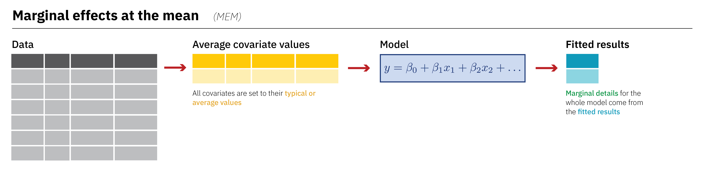
First, we calculate the average value of each of the covariates in the model (in this case, just civil_liberties):
avg_civ_lib <- mean(corruption$civil_liberties)
avg_civ_lib
## [1] 69.7We then plug that average (and that average plus 0.001) into the model and generate fitted values:
civ_lib_fitted <- model_sq |>
augment(newdata = tibble(civil_liberties = c(avg_civ_lib, avg_civ_lib + 0.001)))
civ_lib_fitted
## # A tibble: 2 × 2
## civil_liberties .fitted
## <dbl> <dbl>
## 1 69.7 56.3
## 2 69.7 56.3Because of rounding (and because the values are so tiny), this looks like the two rows are identical, but they’re not—the second one really is 0.001 more than 69.682.
We then subtract the two and divide by 0.001 to get the final marginal effect at the mean:
(civ_lib_fitted[2,2] - civ_lib_fitted[1,2]) / 0.001
## .fitted
## 1 -1.17That doesn’t give us any standard errors or uncertainty or anything, so it’s better to use emtrends() or marginaleffects(). emtrends() calculates this MEM automatically:
model_sq |>
emtrends(~ civil_liberties, var = "civil_liberties", delta.var = 0.001)
## civil_liberties civil_liberties.trend SE df lower.CL upper.CL
## 69.7 -1.17 0.0948 165 -1.35 -0.978
##
## Confidence level used: 0.95We can also calculate the MEM with marginaleffects() if we include the newdata = "mean" argument, which will automatically shrink the original data down into average or typical values:
model_sq |>
marginaleffects(newdata = "mean") |>
summary()
## Term Effect Std. Error z value Pr(>|z|) 2.5 % 97.5 %
## 1 civil_liberties -1.17 0.0948 -12.3 <2e-16 -1.35 -0.98
##
## Model type: lm
## Prediction type: responseThe disadvantage of this approach is that no actual country has a civil_liberties score of exactly 69.682. If we had other covariates in the model, no country would have exactly the average of every variable. The marginal effect is thus calculated based on a hypothetical country that might not possibly exist in real life.
Where this subtle difference really matters
So far, comparing average marginal effects (AME) with marginal effects at the mean (MEM) hasn’t been that useful, since both marginaleffects() and emtrends() provided nearly identical results with our simple model with civil liberties squared. That’s because nothing that strange is going on in the model—there are no additional explanatory variables, no interactions or logs, and we’re using OLS and not anything fancy like logistic regression or beta regression.
Things change once we leave the land of OLS.
Let’s make a new model that predicts if a country has campaign finance disclosure laws based on public sector corruption. Disclosure laws is a binary outcome, so we’ll use logistic regression to constrain the fitted values and predictions to between 0 and 1.
plot_corruption_logit <- corruption |>
mutate(highlight = public_sector_corruption == min(public_sector_corruption) |
public_sector_corruption == max(public_sector_corruption))
ggplot(plot_corruption_logit,
aes(x = public_sector_corruption, y = as.numeric(disclose_donations))) +
geom_point(aes(color = highlight)) +
geom_smooth(method = "glm", method.args = list(family = binomial(link = "logit")),
color = clrs[2]) +
geom_label(data = slice(filter(plot_corruption_logit, highlight == TRUE), 1),
aes(label = country_name), nudge_y = 0.06, hjust = 1) +
geom_label(data = slice(filter(plot_corruption_logit, highlight == TRUE), 2),
aes(label = country_name), nudge_y = -0.06, hjust = 0) +
scale_color_manual(values = c("grey30", clrs[3]), guide = "none") +
labs(x = "Public sector corruption",
y = "Presence or absence of\ncampaign finance disclosure laws\n(Line shows predicted probability)") +
theme_mfx()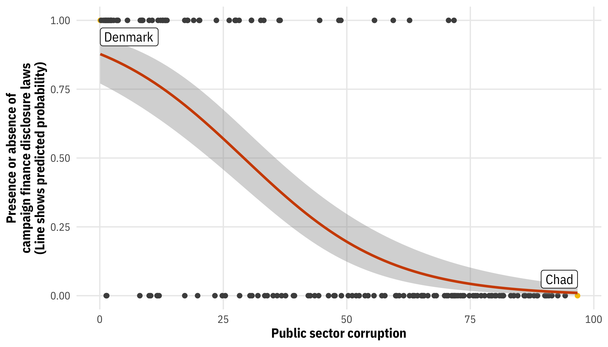
Even without any squared terms, we’re already in non-linear land. We can build a model and explore this relationship:
model_logit <- glm(
disclose_donations ~ public_sector_corruption,
family = binomial(link = "logit"),
data = corruption
)
tidy(model_logit)
## # A tibble: 2 × 5
## term estimate std.error statistic p.value
## <chr> <dbl> <dbl> <dbl> <dbl>
## 1 (Intercept) 1.98 0.388 5.09 3.51e- 7
## 2 public_sector_corruption -0.0678 0.00991 -6.84 7.85e-12The coefficients here are on a different scale and are measured in log odds units (or logits), not probabilities or percentage points. That means we can’t use those coefficients directly. We can’t say things like “a one-unit increase in public sector corruption is associated with a −0.068 percentage point decrease in the probability of having a disclosure law.” That’s wrong! We have to convert those logit scale coefficients to a probability scale instead. We can do this mathematically by combining both the intercept and the coefficient using plogis(intercept + coefficient) - plogis(intercept), but that’s generally not recommended, especially when there are other coefficients (see this section on logistic regression for more details). Additionally, manually combining intercepts and coefficients won’t give us standard errors or any other kind of uncertainty.
Instead, we can calculate the average slope of the logistic regression fit using either marginaleffects() or emtrends().
First we’ll use marginaleffects(). Remember that it calculates the average marginal effect (AME) by plugging each row of the original data into the model, generating predictions and instantaneous slopes for each row, and then averaging the dydx column. Each row contains actual observed data, so the predictions arguably reflect variation in reality. marginaleffects() helpfully converts the AME into percentage points (note that it says “Prediction type: response”), so we can interpret the value directly.
model_logit |>
marginaleffects() |>
summary()
## Term Effect Std. Error z value Pr(>|z|) 2.5 % 97.5 %
## 1 public_sector_corruption -0.00846 0.000261 -32.4 <2e-16 -0.00897 -0.00795
##
## Model type: glm
## Prediction type: responseThe average marginal effect for public sector corruption is −0.0085, which means that on average, a one-point increase in the public sector corruption index (i.e. as corruption gets worse) is associated with a −0.85 percentage point decrease in the probability of a country having a disclosure law.
Next we’ll use emtrends(), which calculates the marginal effect at the mean (MEM) by averaging all the model covariates first, plugging those averages into the model, and generating a single instantaneous slope. The values that get plugged into the model won’t necessarily reflect reality—especially once more covariates are involved, which we’ll see later. By default emtrends() returns the results on the logit scale, but we can convert them to the response/percentage point scale by adding the regrid = "response" argument:
model_logit |>
emtrends(~ public_sector_corruption,
var = "public_sector_corruption",
regrid = "response")
## public_sector_corruption public_sector_corruption.trend SE df asymp.LCL asymp.UCL
## 45.8 -0.0125 0.0017 Inf -0.0158 -0.00916
##
## Confidence level used: 0.95
# marginaleffects() will show the same MEM result with `newdata = "mean"`
# marginaleffects(model_logit, newdata = "mean") |> summary()When we plug the average public sector corruption (45.82) into the model, we get an MEM of −0.0125, which means that on average, a one-point increase in the public sector corruption index is associated with a −1.25 percentage point decrease in the probability of a country having a disclosure law. That’s different (and bigger!) than the AME we found with marginaleffects()!
Let’s plot these marginal effects and their uncertainty to see how much they differ:
# Get tidied results from marginaleffects()
plot_ame <- model_logit |>
marginaleffects() |>
tidy()
# Get tidied results from emtrends()
plot_mem <- model_logit |>
emtrends(~ public_sector_corruption,
var = "public_sector_corruption",
regrid = "response") |>
tidy(conf.int = TRUE) |>
rename(estimate = public_sector_corruption.trend)
# Combine the two tidy data frames for plotting
plot_effects <- bind_rows("AME" = plot_ame, "MEM" = plot_mem, .id = "type") |>
mutate(nice_slope = nice_number(estimate * 100))
ggplot(plot_effects, aes(x = estimate * 100, y = fct_rev(type), color = type)) +
geom_vline(xintercept = 0, size = 0.5, linetype = "24", color = clrs[1]) +
geom_pointrange(aes(xmin = conf.low * 100, xmax = conf.high * 100)) +
geom_label(aes(label = nice_slope), nudge_y = 0.3) +
labs(x = "Marginal effect (percentage points)", y = NULL) +
scale_color_manual(values = c(clrs[2], clrs[5]), guide = "none") +
theme_mfx()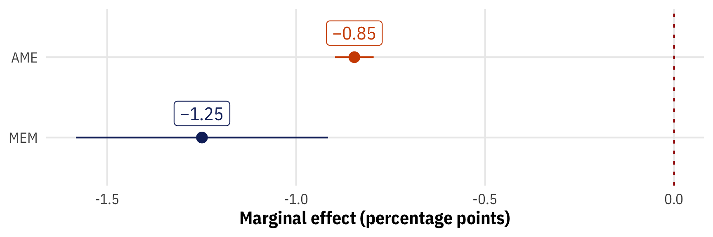
That’s fascinating! The confidence interval around the AME is really small compared to the MEM, likely because the AME estimate comes from the average of 168 values, while the MEM is the prediction of a single value. Additionally, while both estimates hover around a 1 percentage point decrease, the AME is larger than −1 while the MEM is smaller.
For fun, let’s make a super fancy logistic regression model with a quadratic term and an interaction. We’ll compare the AME and MEM for public sector corruption again. This is where either marginaleffects() or emtrends() is incredibly helpful—correctly combining all the necessary coefficients, given that corruption is both squared and interacted, and given that there are other variables to worry about, would be really hard.
model_logit_fancy <- glm(
disclose_donations ~ public_sector_corruption + I(public_sector_corruption^2) +
polyarchy + log_gdp_percapita + public_sector_corruption * region,
family = binomial(link = "logit"),
data = corruption
)Here are the average marginal effects (AME) (again, each original row is plugged into the model, a slope is calculated for each, and then they’re all averaged together):
model_logit_fancy |>
marginaleffects() |>
summary()
## Term Contrast Effect Std. Error z value Pr(>|z|) 2.5 % 97.5 %
## 1 public_sector_corruption dY/dX -0.00653 0.00192 -3.408 7e-04 -0.01029 -0.00278
## 2 polyarchy dY/dX 0.00226 0.00172 1.316 0.188 -0.00111 0.00564
## 3 log_gdp_percapita dY/dX 0.00960 0.03782 0.254 0.800 -0.06453 0.08373
## 4 region Latin America and the Caribbean - Eastern Europe and Central Asia -0.26174 0.10388 -2.520 0.012 -0.46535 -0.05813
## 5 region Middle East and North Africa - Eastern Europe and Central Asia -0.20647 0.10835 -1.906 0.057 -0.41884 0.00589
## 6 region Sub-Saharan Africa - Eastern Europe and Central Asia -0.24986 0.11533 -2.167 0.030 -0.47590 -0.02383
## 7 region Western Europe and North America - Eastern Europe and Central Asia -0.29109 0.09726 -2.993 0.003 -0.48171 -0.10046
## 8 region Asia and Pacific - Eastern Europe and Central Asia -0.20418 0.09534 -2.142 0.032 -0.39103 -0.01732
##
## Model type: glm
## Prediction type: responseAnd here are the marginal effects at the mean (MEM) (again, the average values for each covariate are plugged into the model). Using emtrends() results in a note about interactions, so we’ll use marginaleffects(..., newdata = "mean") instead:
model_logit_fancy |>
emtrends(~ public_sector_corruption,
var = "public_sector_corruption",
regrid = "response")
## NOTE: Results may be misleading due to involvement in interactions
## public_sector_corruption public_sector_corruption.trend SE df asymp.LCL asymp.UCL
## 45.8 -0.00955 0.00301 Inf -0.0155 -0.00366
##
## Results are averaged over the levels of: region
## Confidence level used: 0.95
# This uses marginaleffects() to find the MEM instead
model_logit_fancy |>
marginaleffects(newdata = "mean") |>
summary()
## Term Contrast Effect Std. Error z value Pr(>|z|) 2.5 % 97.5 %
## 1 public_sector_corruption dY/dX -0.01004 0.00634 -1.584 0.113 -0.0225 0.00238
## 2 polyarchy dY/dX 0.00217 0.00223 0.972 0.331 -0.0022 0.00654
## 3 log_gdp_percapita dY/dX 0.00919 0.03940 0.233 0.816 -0.0680 0.08641
## 4 region Latin America and the Caribbean - Eastern Europe and Central Asia -0.37448 0.17046 -2.197 0.028 -0.7086 -0.04039
## 5 region Middle East and North Africa - Eastern Europe and Central Asia -0.57907 0.21821 -2.654 0.008 -1.0068 -0.15139
## 6 region Sub-Saharan Africa - Eastern Europe and Central Asia -0.56591 0.17710 -3.195 0.001 -0.9130 -0.21880
## 7 region Western Europe and North America - Eastern Europe and Central Asia -0.65700 0.17381 -3.780 2e-04 -0.9977 -0.31634
## 8 region Asia and Pacific - Eastern Europe and Central Asia -0.53122 0.20644 -2.573 0.010 -0.9358 -0.12660
##
## Model type: glm
## Prediction type: responseNow that we’re working with multiple covariates, we have instantaneous marginal effects for each regression term, which is neat. We only care about corruption here, so let’s extract the slopes and plot them:
plot_ame_fancy <- model_logit_fancy |>
marginaleffects() |>
tidy()
plot_mem_fancy <- model_logit_fancy |>
marginaleffects(newdata = "mean") |>
tidy()
# Combine the two tidy data frames for plotting
plot_effects <- bind_rows("AME" = plot_ame_fancy, "MEM" = plot_mem_fancy, .id = "type") |>
filter(term == "public_sector_corruption") |>
mutate(nice_slope = nice_number(estimate * 100))
ggplot(plot_effects, aes(x = estimate * 100, y = fct_rev(type), color = type)) +
geom_vline(xintercept = 0, size = 0.5, linetype = "24", color = clrs[1]) +
geom_pointrange(aes(xmin = conf.low * 100, xmax = conf.high * 100)) +
geom_label(aes(label = nice_slope), nudge_y = 0.3) +
labs(x = "Marginal effect (percentage points)", y = NULL) +
scale_color_manual(values = c(clrs[2], clrs[5]), guide = "none") +
theme_mfx()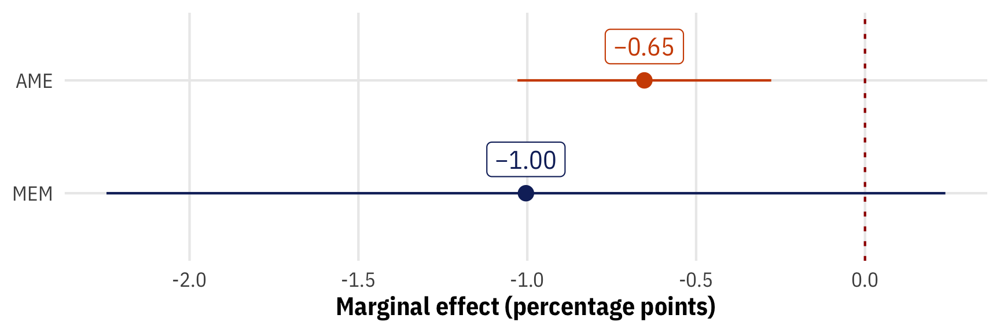
Yikes! The AME is statistically significant (p < 0.001) with a narrower confidence interval, but the MEM includes zero in its confidence interval and isn’t significant (p = 0.113).
The choice of marginal effect averaging thus matters a lot!
Other marginal slope things
To make life even more exciting, we’re not limited to just average marginal effects (AMEs) or marginal effects at the mean (MEMs). Additionally, if we think back to the slider/switch/mixing board analogy, all we’ve really done so far with our logistic regression model is move one slider (public_sector_corruption) up and down. What happens if we move other switches and sliders at the same time? (i.e. the marginal effect of corruption at specific values of corruption, or across different regions, or at different levels of GDP per capita and polyarchy)
We can use both marginaleffects() and emtrends()/emmeans() to play with our model’s full mixing board. We’ll continue to use the logistic regression model as an example since it’s sensitive to the order of averaging.
Group average marginal effects
If we have categorical covariates in our model like region, we can find the average marginal effect (AME) of continuous predictors across those different groups. This is fairly straightforward when working with marginaleffects() because of its approach to averaging. Remember that with the AME, each original row gets its own fitted value and each individual slope, which we can then average and collapse into a single row. Group characteristics like region are maintained after calculating predictions, so we can calculate group averages of the individual slopes. This outlines the process:
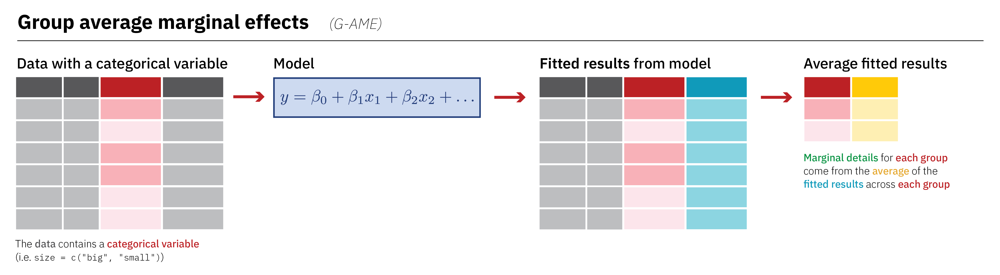
Because we’re working with the AME, we have a dydx column with instantaneous slopes for each row in the original data:
# We'll specify variables = "public_sector_corruption" here to filter the
# marginal effects results. If we don't we'll get dozens of separate marginal
# effects later when using summary() or tidy(), for each of the coefficients,
# interactions, and cross-region contrasts
mfx_logit_fancy <- model_logit_fancy |>
marginaleffects(variables = "public_sector_corruption")
# Original data frame + estimated dydx for each row
head(mfx_logit_fancy)
## rowid type term dydx std.error statistic p.value conf.low conf.high predicted predicted_hi predicted_lo disclose_donations public_sector_corruption public_sector_corruption.1 polyarchy log_gdp_percapita region eps
## 1 1 response public_sector_corruption -0.008825 0.00768 -1.149 0.251 -0.02388 0.00623 0.3487 0.3486 0.3487 TRUE 48.8 2381.44 64.7 9.10 Latin America and the Caribbean 0.00966
## 2 2 response public_sector_corruption -0.000897 0.00790 -0.114 0.910 -0.01637 0.01458 0.5280 0.5279 0.5280 FALSE 24.8 615.04 76.1 8.93 Latin America and the Caribbean 0.00966
## 3 3 response public_sector_corruption -0.006759 0.00510 -1.325 0.185 -0.01676 0.00324 0.9045 0.9045 0.9045 FALSE 1.3 1.69 90.8 10.85 Western Europe and North America 0.00966
## 4 4 response public_sector_corruption -0.006727 0.00546 -1.232 0.218 -0.01743 0.00397 0.9052 0.9052 0.9052 FALSE 1.4 1.96 89.4 11.36 Western Europe and North America 0.00966
## 5 5 response public_sector_corruption -0.002460 0.00322 -0.764 0.445 -0.00877 0.00385 0.0198 0.0197 0.0198 FALSE 65.2 4251.04 72.0 7.61 Sub-Saharan Africa 0.00966
## 6 6 response public_sector_corruption -0.005864 0.00556 -1.055 0.291 -0.01676 0.00503 0.0538 0.0538 0.0538 FALSE 57.1 3260.41 70.3 8.64 Sub-Saharan Africa 0.00966All the original columns are still there, which means we can collapse the results however we want. For instance, here’s the average marginal effect across each region:
mfx_logit_fancy |>
group_by(region) |>
summarize(region_ame = mean(dydx))
## # A tibble: 6 × 2
## region region_ame
## <fct> <dbl>
## 1 Eastern Europe and Central Asia -0.00751
## 2 Latin America and the Caribbean -0.00326
## 3 Middle East and North Africa -0.00629
## 4 Sub-Saharan Africa -0.00435
## 5 Western Europe and North America -0.0112
## 6 Asia and Pacific -0.00830We can also use summarizing methods built in to marginaleffects by using the by argument in marginaleffects(). This is the better option, since it does some tricky standard error calculations behind the scenes:
model_logit_fancy |>
marginaleffects(variables = "public_sector_corruption",
by = "region")
## type term contrast dydx std.error statistic p.value conf.low conf.high predicted predicted_hi predicted_lo region
## 1 response public_sector_corruption mean(dY/dX) -0.00326 0.00376 -0.865 0.38693 -0.01063 0.00412 3.49e-01 3.49e-01 3.49e-01 Latin America and the Caribbean
## 2 response public_sector_corruption mean(dY/dX) -0.01123 0.00911 -1.233 0.21745 -0.02908 0.00662 9.05e-01 9.04e-01 9.05e-01 Western Europe and North America
## 3 response public_sector_corruption mean(dY/dX) -0.00435 0.00160 -2.722 0.00649 -0.00748 -0.00122 1.98e-02 1.97e-02 1.98e-02 Sub-Saharan Africa
## 4 response public_sector_corruption mean(dY/dX) -0.00830 0.00285 -2.916 0.00355 -0.01389 -0.00272 9.11e-01 9.11e-01 9.11e-01 Asia and Pacific
## 5 response public_sector_corruption mean(dY/dX) -0.00751 0.00248 -3.029 0.00245 -0.01236 -0.00265 1.86e-01 1.86e-01 1.86e-01 Eastern Europe and Central Asia
## 6 response public_sector_corruption mean(dY/dX) -0.00629 0.00194 -3.245 0.00117 -0.01009 -0.00249 9.03e-05 9.02e-05 9.03e-05 Middle East and North AfricaThese are on the percentage point scale, not the logit scale, so we can interpret them directly. In Western Europe, the AME of corruption is −0.0112, so a one-point increase in the public sector corruption index there is associated with a −1.12 percentage point decrease in the probability of having a campaign finance disclosure law, on average (though it’s not actually significant (p = 0.217)). In the Middle East, on the other hand, corruption seems to matter less for disclosure laws—an increase in the corruption index there is associated with a −0.63 percentage point decrease in the probability of having a laws, on average (and that is significant (p = 0.001)).
We can use emtrends() to get region-specific slopes, but we’ll get different results because of the order of averaging. emmeans creates averages and then plugs them in; marginaleffects plugs all the values in and then creates averages:
model_logit_fancy |>
emtrends(~ public_sector_corruption + region,
var = "public_sector_corruption", regrid = "response")
## public_sector_corruption region public_sector_corruption.trend SE df asymp.LCL asymp.UCL
## 45.8 Eastern Europe and Central Asia -0.01119 0.00554 Inf -0.0221 -0.00033
## 45.8 Latin America and the Caribbean -0.00734 0.00611 Inf -0.0193 0.00463
## 45.8 Middle East and North Africa -0.01172 0.01105 Inf -0.0334 0.00993
## 45.8 Sub-Saharan Africa -0.01001 0.00607 Inf -0.0219 0.00188
## 45.8 Western Europe and North America -0.00335 0.00769 Inf -0.0184 0.01172
## 45.8 Asia and Pacific -0.01371 0.00667 Inf -0.0268 -0.00063
##
## Confidence level used: 0.95We can replicate the results from emtrends() with marginaleffects() if we plug in average or representative values (more on that in the next section), since that follows the same averaging order as emmeans (i.e. plugging averages into the model)
model_logit_fancy |>
marginaleffects(variables = "public_sector_corruption",
newdata = datagrid(region = levels(corruption$region)),
by = "region") |>
summary()
## Term Contrast region Effect Std. Error z value Pr(>|z|) 2.5 % 97.5 %
## 1 public_sector_corruption mean(dY/dX) Eastern Europe and Central Asia -0.01117 0.00573 -1.950 0.05 -0.0224 5.47e-05
## 2 public_sector_corruption mean(dY/dX) Latin America and the Caribbean -0.00733 0.00692 -1.059 0.29 -0.0209 6.24e-03
## 3 public_sector_corruption mean(dY/dX) Middle East and North Africa -0.01177 0.01110 -1.060 0.29 -0.0335 9.98e-03
## 4 public_sector_corruption mean(dY/dX) Sub-Saharan Africa -0.01004 0.00634 -1.584 0.11 -0.0225 2.38e-03
## 5 public_sector_corruption mean(dY/dX) Western Europe and North America -0.00336 0.00776 -0.434 0.66 -0.0186 1.18e-02
## 6 public_sector_corruption mean(dY/dX) Asia and Pacific -0.01375 0.00702 -1.959 0.05 -0.0275 8.69e-06
##
## Model type: glm
## Prediction type: responseMarginal effects at user-specified or representative values
If we want to unlock the full potential of our regression mixing board, we can feed the model any values we want. In general, we’ll (1) make a little dataset with covariate values set to either specific values that we care about, or typical or average values, (2) plug that little dataset into the the model and get fitted values, and (3) work with the results. There are a bunch of different names for this little fake dataset like “data grid” and “reference grid”, but they’re all the same idea. Here’s an overview of the approach:
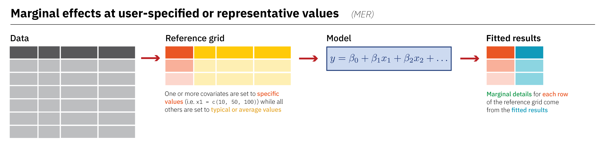
Creating representative values
Before plugging anything in, it’s helpful to look at different ways of creating data grids with R. For all these examples, we’ll make a dataset with public sector corruption set to 20 and 80 across Western Europe, Latin America, and the Middle East, with all other variables in the model set to their means. We’ll make a little list of these regions to save typing time:
regions_to_use <- c("Western Europe and North America",
"Latin America and the Caribbean",
"Middle East and North Africa")First, we can do it all manually with the expand_grid() function from tidyr (or expand.grid() from base R). This creates a data frame from all combinations of the vectors and single values we feed it.
expand_grid(public_sector_corruption = c(20, 80),
region = regions_to_use,
polyarchy = mean(corruption$polyarchy),
log_gdp_percapita = mean(corruption$log_gdp_percapita))
## # A tibble: 6 × 4
## public_sector_corruption region polyarchy log_gdp_percapita
## <dbl> <chr> <dbl> <dbl>
## 1 20 Western Europe and North America 52.8 8.57
## 2 20 Latin America and the Caribbean 52.8 8.57
## 3 20 Middle East and North Africa 52.8 8.57
## 4 80 Western Europe and North America 52.8 8.57
## 5 80 Latin America and the Caribbean 52.8 8.57
## 6 80 Middle East and North Africa 52.8 8.57A disadvantage of using expand_grid() like this is that the averages we calculated aren’t necessarily the same averages of the data that gets used in the model. If any rows are dropped in the model because of missing values, that won’t be reflected here. We could get around that by doing model.frame(model_logit_fancy)$polyarchy, but that’s starting to get unwieldy. Instead, we can use a function that takes information about the model into account.
Second, we can use data_grid() from modelr, which is part of the really neat tidymodels ecosystem. An advantage of doing this is that it will handle the typical value part automatically—it will calculate the mean for continuous predictors and the mode for categorical predictors.
modelr::data_grid(corruption,
public_sector_corruption = c(20, 80),
region = regions_to_use,
.model = model_logit_fancy)
## # A tibble: 6 × 4
## public_sector_corruption region polyarchy log_gdp_percapita
## <dbl> <chr> <dbl> <dbl>
## 1 20 Latin America and the Caribbean 54.2 8.52
## 2 20 Middle East and North Africa 54.2 8.52
## 3 20 Western Europe and North America 54.2 8.52
## 4 80 Latin America and the Caribbean 54.2 8.52
## 5 80 Middle East and North Africa 54.2 8.52
## 6 80 Western Europe and North America 54.2 8.52Third, we can use marginaleffects’s datagrid(), which will also calculate typical values for any covariates we don’t specify:
datagrid(model = model_logit_fancy,
public_sector_corruption = c(20, 80),
region = regions_to_use)
## disclose_donations polyarchy log_gdp_percapita public_sector_corruption region
## 1 FALSE 52.8 8.57 20 Western Europe and North America
## 2 FALSE 52.8 8.57 20 Latin America and the Caribbean
## 3 FALSE 52.8 8.57 20 Middle East and North Africa
## 4 FALSE 52.8 8.57 80 Western Europe and North America
## 5 FALSE 52.8 8.57 80 Latin America and the Caribbean
## 6 FALSE 52.8 8.57 80 Middle East and North AfricaAnd finally, we can use emmeans’s ref_grid(), which will also automatically create typical values. This doesn’t return a data frame—it’s some sort of special ref_grid object, but all the important information is still there:
ref_grid(model_logit_fancy,
at = list(public_sector_corruption = c(20, 80),
region = regions_to_use))
## 'emmGrid' object with variables:
## public_sector_corruption = 20, 80
## polyarchy = 52.79
## log_gdp_percapita = 8.5674
## region = Western Europe and North America, Latin America and the Caribbean, Middle East and North Africa
## Transformation: "logit"Working with representative values
Now that we have a hypothetical data grid of sliders and switches set to specific values, we can plug it into the model and generate fitted values. Importantly, doing this provides us with results that are analogous to the marginal effects at the mean (MEM) that we found earlier, and not the average marginal effect (AME), since we’re not feeding the entire original dataset to the model. None of these hypothetical rows exist in real life—there is no country with any of these exact combinations of corruption, polyarchy/democracy, GDP per capita, or region.
model_logit_fancy |>
marginaleffects(variables = "public_sector_corruption",
newdata = datagrid(public_sector_corruption = c(20, 80),
region = regions_to_use))
## rowid type term dydx std.error statistic p.value conf.low conf.high predicted predicted_hi predicted_lo disclose_donations polyarchy log_gdp_percapita public_sector_corruption region eps
## 1 1 response public_sector_corruption -2.49e-02 1.57e-02 -1.5926 0.111 -0.055603 0.005751 3.81e-01 3.81e-01 3.81e-01 FALSE 52.8 8.57 20 Western Europe and North America 0.00966
## 2 2 response public_sector_corruption 8.27e-04 8.56e-03 0.0966 0.923 -0.015956 0.017610 3.97e-01 3.97e-01 3.97e-01 FALSE 52.8 8.57 20 Latin America and the Caribbean 0.00966
## 3 3 response public_sector_corruption -2.04e-02 1.43e-02 -1.4228 0.155 -0.048514 0.007704 6.58e-01 6.58e-01 6.58e-01 FALSE 52.8 8.57 20 Middle East and North Africa 0.00966
## 4 4 response public_sector_corruption -1.49e-05 9.71e-05 -0.1534 0.878 -0.000205 0.000175 7.69e-05 7.67e-05 7.69e-05 FALSE 52.8 8.57 80 Western Europe and North America 0.00966
## 5 5 response public_sector_corruption -4.36e-03 3.65e-03 -1.1943 0.232 -0.011528 0.002798 5.45e-02 5.45e-02 5.45e-02 FALSE 52.8 8.57 80 Latin America and the Caribbean 0.00966
## 6 6 response public_sector_corruption -1.06e-04 4.47e-04 -0.2368 0.813 -0.000982 0.000770 5.93e-04 5.92e-04 5.93e-04 FALSE 52.8 8.57 80 Middle East and North Africa 0.00966model_logit_fancy |>
emtrends(~ public_sector_corruption + region, var = "public_sector_corruption",
at = list(public_sector_corruption = c(20, 80),
region = regions_to_use),
regrid = "response", delta.var = 0.001)
## public_sector_corruption region public_sector_corruption.trend SE df asymp.LCL asymp.UCL
## 20 Western Europe and North America -0.02493 0.01560 Inf -0.0555 0.00565
## 80 Western Europe and North America -0.00001 0.00009 Inf -0.0002 0.00015
## 20 Latin America and the Caribbean 0.00083 0.00860 Inf -0.0160 0.01768
## 80 Latin America and the Caribbean -0.00437 0.00353 Inf -0.0113 0.00256
## 20 Middle East and North Africa -0.02040 0.01433 Inf -0.0485 0.00768
## 80 Middle East and North Africa -0.00011 0.00038 Inf -0.0009 0.00065
##
## Confidence level used: 0.95We have a ton of marginal effects here, but this is all starting to get really complicated. These are slopes, but slopes for which lines? What do these marginal effects actually look like?
Plotting these regression lines is tricky because we’re no longer working with a single variable on the x-axis. Instead, we need to generate predicted values of the regression outcome across a range of one \(x\) while holding all the other variables constant. This is exactly what we’ve been doing to get marginal effects, only now instead of getting slopes as the output, we want fitted values. Both marginaleffects and emmeans make this easy.
In the marginaleffects world, we can use predictions(). Instead of a dydx column for the slope, we have a predicted column for the fitted value from the model:
model_logit_fancy |>
predictions(newdata = datagrid(public_sector_corruption = c(20, 80),
region = regions_to_use))
## rowid type predicted std.error statistic p.value conf.low conf.high disclose_donations polyarchy log_gdp_percapita public_sector_corruption region
## 1 1 response 3.81e-01 1.51e-01 2.516 0.011875 1.49e-01 0.68404 FALSE 52.8 8.57 20 Western Europe and North America
## 2 2 response 3.97e-01 1.34e-01 2.960 0.003073 1.80e-01 0.66437 FALSE 52.8 8.57 20 Latin America and the Caribbean
## 3 3 response 6.58e-01 1.77e-01 3.710 0.000207 2.91e-01 0.90016 FALSE 52.8 8.57 20 Middle East and North Africa
## 4 4 response 7.69e-05 6.16e-05 1.248 0.212184 1.60e-05 0.00037 FALSE 52.8 8.57 80 Western Europe and North America
## 5 5 response 5.45e-02 8.55e-02 0.638 0.523582 2.23e-03 0.59798 FALSE 52.8 8.57 80 Latin America and the Caribbean
## 6 6 response 5.93e-04 8.12e-04 0.731 0.465014 4.05e-05 0.00862 FALSE 52.8 8.57 80 Middle East and North AfricaIn the emmeans world, we can use emmeans():
model_logit_fancy |>
emmeans(~ public_sector_corruption + region, var = "public_sector_corruption",
at = list(public_sector_corruption = c(20, 80),
region = regions_to_use),
regrid = "response")
## public_sector_corruption region prob SE df asymp.LCL asymp.UCL
## 20 Western Europe and North America 0.381 0.2975 Inf -0.2021 0.964
## 80 Western Europe and North America 0.000 0.0005 Inf -0.0009 0.001
## 20 Latin America and the Caribbean 0.397 0.1827 Inf 0.0395 0.755
## 80 Latin America and the Caribbean 0.055 0.0776 Inf -0.0975 0.207
## 20 Middle East and North Africa 0.658 0.2505 Inf 0.1671 1.149
## 80 Middle East and North Africa 0.001 0.0024 Inf -0.0042 0.005
##
## Confidence level used: 0.95The results from the two packages are identical because we’re using a data grid—in both cases we’re averaging before plugging stuff into the model.
Instead of setting corruption to 20 and 80, we’ll use a whole range of values so we can plot it.
logit_predictions <- model_logit_fancy |>
emmeans(~ public_sector_corruption + region, var = "public_sector_corruption",
at = list(public_sector_corruption = seq(0, 90, 1)),
regrid = "response") |>
as_tibble()
ggplot(logit_predictions, aes(x = public_sector_corruption, y = prob, color = region)) +
geom_line(size = 1) +
labs(x = "Public sector corruption", y = "Predicted probability of having\na campaign finance disclosure law", color = NULL) +
scale_y_continuous(labels = percent_format()) +
scale_color_manual(values = c(clrs, "grey30")) +
theme_mfx() +
theme(legend.position = "bottom")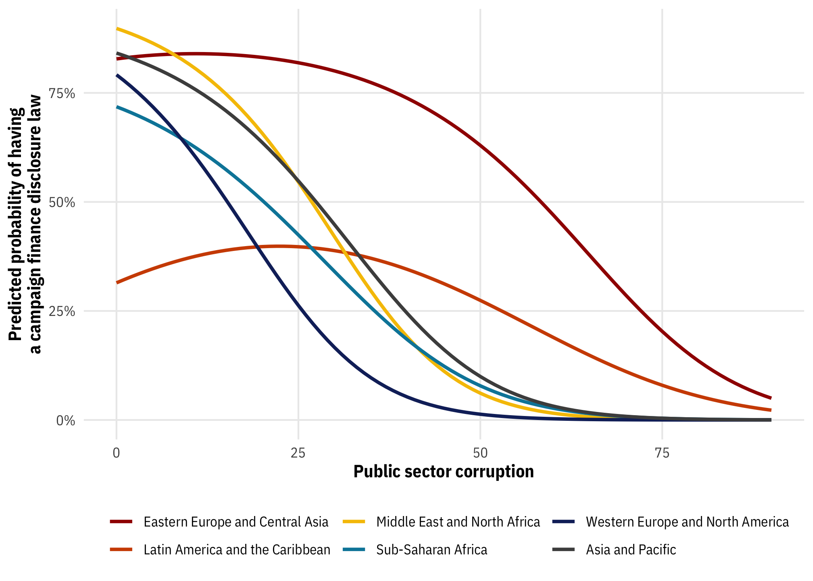
(Alternatively, you can use marginaleffects’s built-in plot_cap() to make this plot with one line of code):
plot_cap(model_logit_fancy, condition = c("public_sector_corruption", "region"))That’s such a cool plot! Each region has a different shape of predicted probabilities across public sector corruption.
Earlier we calculated a bunch of instantaneous slopes when corruption was set to 20 and 80 in a few different regions, so let’s put those slopes and their tangent lines on the plot:
logit_slopes <- model_logit_fancy |>
emtrends(~ public_sector_corruption + region, var = "public_sector_corruption",
at = list(public_sector_corruption = c(20, 80),
region = regions_to_use),
regrid = "response", delta.var = 0.001) |>
as_tibble() |>
mutate(panel = glue("Corruption set to {public_sector_corruption}"))
slopes_to_plot <- logit_predictions |>
filter(public_sector_corruption %in% c(20, 80),
region %in% regions_to_use) |>
left_join(select(logit_slopes, public_sector_corruption, region, public_sector_corruption.trend, panel),
by = c("public_sector_corruption", "region")) |>
mutate(intercept = find_intercept(public_sector_corruption, prob, public_sector_corruption.trend)) |>
mutate(round_slope = label_number(accuracy = 0.001, style_negative = "minus")(public_sector_corruption.trend * 100),
nice_slope = glue("Slope: {round_slope} pct pts"))
ggplot(logit_predictions, aes(x = public_sector_corruption, y = prob, color = region)) +
geom_line(size = 1) +
geom_point(data = slopes_to_plot, size = 2, show.legend = FALSE) +
geom_abline(data = slopes_to_plot,
aes(slope = public_sector_corruption.trend, intercept = intercept, color = region),
size = 0.5, linetype = "21", show.legend = FALSE) +
geom_label_repel(data = slopes_to_plot, aes(label = nice_slope),
fontface = "bold", seed = 123, show.legend = FALSE,
size = 3, direction = "y") +
labs(x = "Public sector corruption",
y = "Predicted probability of having\na campaign finance disclosure law",
color = NULL) +
scale_y_continuous(labels = percent_format()) +
scale_color_manual(values = c("grey30", clrs)) +
facet_wrap(vars(panel)) +
theme_mfx() +
theme(legend.position = "bottom")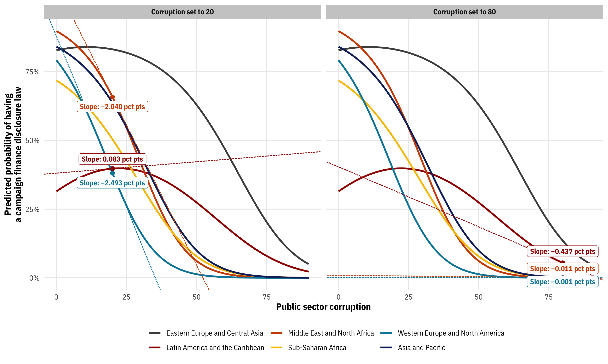
AHH this is delightful! This helps us understand and visualize all these marginal effects. Let’s interpret them:
- In both the Middle East and Western Europe/North America, an increase in public sector corruption in countries with low levels of corruption (20) is associated with a −2.040 and −2.493 percentage point decrease in the probability of seeing a disclosure law, while in low-corruption countries in Latin America, an increase in public sector corruption doesn’t do much to the probability (it increases it slightly by 0.083 percentage points)
- In countries with high levels of corruption (80), on the other hand, a small increase in corruption doesn’t do much to the probability of having a disclosure law in the Middle East (−0.011 percentage point decrease) or Western Europe (−0.001 percentage point decrease). In Latin America, though, a small increase in corruption is associated with a −0.437 percentage point decrease in the probability of having a disclosure law.
MAJOR CAVEAT: None of these marginal effects are statistically significant, so there’s a good chance that they’re possibly zero, or positive, or more negative, or whatever. We can plot just these marginal slopes to show this:
ggplot(logit_slopes, aes(x = public_sector_corruption.trend * 100, y = region, color = region)) +
geom_vline(xintercept = 0, size = 0.5, linetype = "24", color = clrs[5]) +
geom_pointrange(aes(xmin = asymp.LCL * 100, xmax = asymp.UCL * 100)) +
scale_color_manual(values = c(clrs[4], clrs[1], clrs[2]), guide = "none") +
labs(x = "Marginal effect (percentage points)", y = NULL) +
facet_wrap(vars(panel), ncol = 1) +
theme_mfx()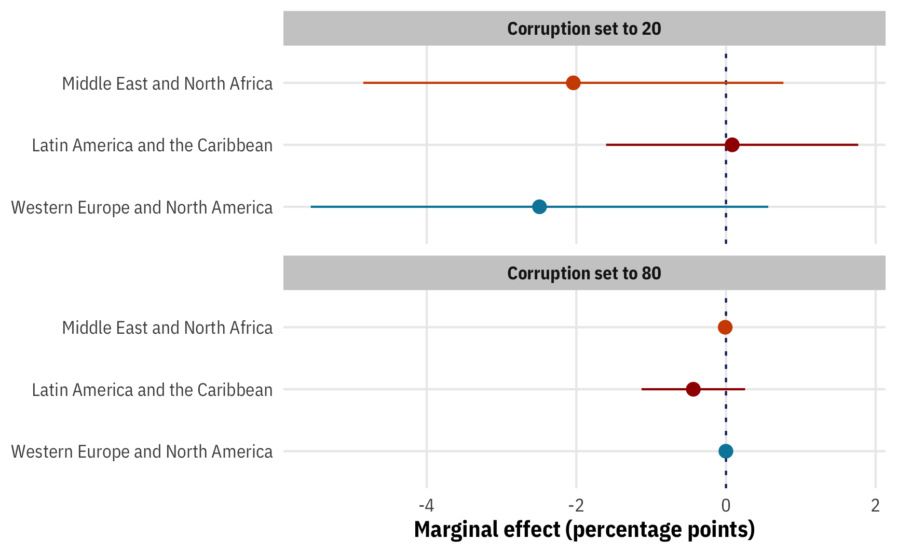
Average marginal effects at counterfactual user-specified values
Calculating marginal effects at representative values is useful and widespread—plugging different values into the model while holding others constant is the best way to see how all the different moving parts of a model work, especially when there interactions, exponents, or non-linear outcomes. We’re using the full mixing panel here!
However, creating a hypothetical data or reference grid creates hypothetical observations that might never exist in real life. This was the main difference behind the average marginal effect (AME) and the marginal effect at the mean (MEM) that we looked at earlier. Passing average covariate values into a model creates average predictions, but those averages might not reflect reality.
For example, we used this data grid to look at the effect of corruption on the probability of having a campaign finance disclosure law across different regions:
datagrid(model = model_logit_fancy,
public_sector_corruption = c(20, 80),
region = regions_to_use)
## disclose_donations polyarchy log_gdp_percapita public_sector_corruption region
## 1 FALSE 52.8 8.57 20 Western Europe and North America
## 2 FALSE 52.8 8.57 20 Latin America and the Caribbean
## 3 FALSE 52.8 8.57 20 Middle East and North Africa
## 4 FALSE 52.8 8.57 80 Western Europe and North America
## 5 FALSE 52.8 8.57 80 Latin America and the Caribbean
## 6 FALSE 52.8 8.57 80 Middle East and North AfricaPolyarchy (democracy) and GDP per capita here are set at their dataset-level means, but that’s not how the world actually works. Levels of democracy and personal wealth vary a lot by region:
corruption |>
filter(region %in% regions_to_use) |>
group_by(region) |>
summarize(avg_polyarchy = mean(polyarchy),
avg_log_gdp_percapita = mean(log_gdp_percapita))
## # A tibble: 3 × 3
## region avg_polyarchy avg_log_gdp_percapita
## <fct> <dbl> <dbl>
## 1 Latin America and the Caribbean 62.9 8.77
## 2 Middle East and North Africa 27.4 9.01
## 3 Western Europe and North America 86.5 10.7Western Europe is far more democratic (average polyarchy = 86.50) than the Middle East (average polyarchy = 27.44). But in our calculations for finding region-specific marginal effects, we’ve been using a polyarchy value of 52.79 for all the regions.
Fortunately we can do something neat to work with observed covariate values and thus create an AME-flavored marginal effect at representative values instead of the current MEM-flavored marginal effect at representative values. Here’s the general process:
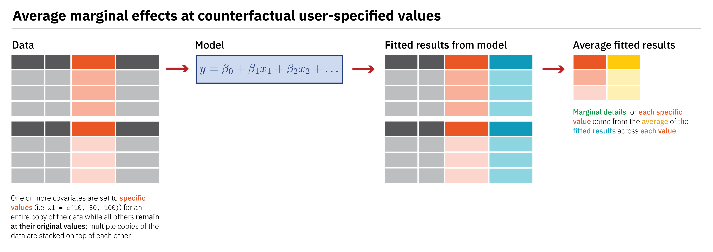
Instead of creating a data or reference grid, we create multiple copies of our original dataset. In each copy we change the columns that we want to set to specific values and we leave all the other columns at their original values. We then feed all the copies of the dataset into the model and generate a ton of fitted values, which we then collapse into average effects.
That sounds really complex, but it’s only a matter of adding one argument to marginaleffects::datagrid(). We’ll take region out of datagrid here so that we keep all the original regions—we’ll take the average across those regions after the fact.
cfct_data <- datagrid(model = model_logit_fancy,
public_sector_corruption = c(20, 80),
grid_type = "counterfactual")This new data grid has twice the number of rows that we have in the original data, since there are now two copies of the data stacked together:
nrow(corruption)
## [1] 168
nrow(cfct_data)
## [1] 336To verify, lets look at the first 5 rows in each of the copies:
cfct_data[c(1:5, nrow(corruption) + 1:5), ]
## rowidcf disclose_donations polyarchy log_gdp_percapita region public_sector_corruption
## 1 1 TRUE 64.7 9.10 Latin America and the Caribbean 20
## 2 2 FALSE 76.1 8.93 Latin America and the Caribbean 20
## 3 3 FALSE 90.8 10.85 Western Europe and North America 20
## 4 4 FALSE 89.4 11.36 Western Europe and North America 20
## 5 5 FALSE 72.0 7.61 Sub-Saharan Africa 20
## 169 1 TRUE 64.7 9.10 Latin America and the Caribbean 80
## 170 2 FALSE 76.1 8.93 Latin America and the Caribbean 80
## 171 3 FALSE 90.8 10.85 Western Europe and North America 80
## 172 4 FALSE 89.4 11.36 Western Europe and North America 80
## 173 5 FALSE 72.0 7.61 Sub-Saharan Africa 80That’s neat! These 5 countries all have their original values of polyarchy, GDP per capita, and region, but have their public sector corruption indexes set to 20 (in the first copy) and 80 (in the second copy).
We can feed this stacked data to marginaleffects() to get an instantaneous slope (dydx) for each row:
# Specify variables = "public_sector_corruption" so that it doesn't calculate
# marginal effects and contrasts for all the other covariates
mfx_cfct <- model_logit_fancy |>
marginaleffects(newdata = datagrid(public_sector_corruption = c(20, 80),
grid_type = "counterfactual"),
variables = "public_sector_corruption")
head(mfx_cfct)
## rowid type term dydx std.error statistic p.value conf.low conf.high rowidcf predicted predicted_hi predicted_lo disclose_donations polyarchy log_gdp_percapita region public_sector_corruption eps
## 1 1 response public_sector_corruption 0.000860 0.00897 0.0959 0.924 -0.0167 0.01845 1 0.471 0.471 0.471 TRUE 64.7 9.10 Latin America and the Caribbean 20 0.00966
## 2 2 response public_sector_corruption 0.000861 0.00902 0.0955 0.924 -0.0168 0.01853 2 0.528 0.528 0.528 FALSE 76.1 8.93 Latin America and the Caribbean 20 0.00966
## 3 3 response public_sector_corruption -0.024669 0.02426 -1.0168 0.309 -0.0722 0.02288 3 0.629 0.629 0.629 FALSE 90.8 10.85 Western Europe and North America 20 0.00966
## 4 4 response public_sector_corruption -0.024566 0.02461 -0.9980 0.318 -0.0728 0.02368 4 0.633 0.633 0.633 FALSE 89.4 11.36 Western Europe and North America 20 0.00966
## 5 5 response public_sector_corruption -0.014743 0.01034 -1.4253 0.154 -0.0350 0.00553 5 0.584 0.584 0.584 FALSE 72.0 7.61 Sub-Saharan Africa 20 0.00966
## 6 6 response public_sector_corruption -0.014592 0.01036 -1.4091 0.159 -0.0349 0.00570 6 0.598 0.597 0.598 FALSE 70.3 8.64 Sub-Saharan Africa 20 0.00966Finally we can calculate group averages for each of the levels of public_sector_corruption to get AME-flavored effects:
mfx_cfct |>
group_by(public_sector_corruption) |>
summarize(avg_dydx = mean(dydx))
## # A tibble: 2 × 2
## public_sector_corruption avg_dydx
## <dbl> <dbl>
## 1 20 -0.0128
## 2 80 -0.00307Or we can let marginaleffects deal with the averaging so that we can get standard errors and confidence intervals:
model_logit_fancy |>
marginaleffects(newdata = datagrid(public_sector_corruption = c(20, 80),
grid_type = "counterfactual"),
variables = "public_sector_corruption",
by = "public_sector_corruption")
## type term contrast dydx std.error statistic p.value conf.low conf.high predicted predicted_hi predicted_lo public_sector_corruption
## 1 response public_sector_corruption mean(dY/dX) -0.01277 0.00659 -1.94 0.0528 -0.02569 0.000155 0.4713 0.4713 0.4713 20
## 2 response public_sector_corruption mean(dY/dX) -0.00307 0.00153 -2.01 0.0449 -0.00606 -0.000070 0.0723 0.0722 0.0723 80We can also calculate group averages across each region to get region-specific AME-flavored effects:
mfx_cfct |>
filter(region %in% regions_to_use) |>
group_by(public_sector_corruption, region) |>
summarize(avg_dydx = mean(dydx))
## `summarise()` has grouped output by 'public_sector_corruption'. You can override using the `.groups` argument.
## # A tibble: 6 × 3
## # Groups: public_sector_corruption [2]
## public_sector_corruption region avg_dydx
## <dbl> <fct> <dbl>
## 1 20 Latin America and the Caribbean 0.000816
## 2 20 Middle East and North Africa -0.0218
## 3 20 Western Europe and North America -0.0252
## 4 80 Latin America and the Caribbean -0.00570
## 5 80 Middle East and North Africa -0.0000711
## 6 80 Western Europe and North America -0.0000370Or again, we can get standard errors and confidence intervals:
model_logit_fancy |>
marginaleffects(newdata = datagrid(public_sector_corruption = c(20, 80),
grid_type = "counterfactual"),
variables = "public_sector_corruption",
by = c("public_sector_corruption", "region"))
## type term contrast dydx std.error statistic p.value conf.low conf.high predicted predicted_hi predicted_lo region public_sector_corruption
## 1 response public_sector_corruption mean(dY/dX) 8.16e-04 0.008492 0.0961 0.923 -0.015827 0.017459 0.471295 0.471303 0.471295 Latin America and the Caribbean 20
## 2 response public_sector_corruption mean(dY/dX) -2.52e-02 0.023464 -1.0760 0.282 -0.071236 0.020743 0.629163 0.628925 0.629163 Western Europe and North America 20
## 3 response public_sector_corruption mean(dY/dX) -1.43e-02 0.011329 -1.2636 0.206 -0.036518 0.007889 0.583887 0.583745 0.583887 Sub-Saharan Africa 20
## 4 response public_sector_corruption mean(dY/dX) -1.62e-02 0.010539 -1.5345 0.125 -0.036828 0.004484 0.798723 0.798614 0.798723 Asia and Pacific 20
## 5 response public_sector_corruption mean(dY/dX) -1.84e-03 0.005486 -0.3356 0.737 -0.012594 0.008911 0.747530 0.747505 0.747530 Eastern Europe and Central Asia 20
## 6 response public_sector_corruption mean(dY/dX) -2.18e-02 0.016463 -1.3221 0.186 -0.054032 0.010501 0.472588 0.472370 0.472588 Middle East and North Africa 20
## 7 response public_sector_corruption mean(dY/dX) -5.70e-03 0.004382 -1.2997 0.194 -0.014283 0.002893 0.072297 0.072242 0.072297 Latin America and the Caribbean 80
## 8 response public_sector_corruption mean(dY/dX) -3.70e-05 0.000244 -0.1515 0.880 -0.000516 0.000442 0.000212 0.000212 0.000212 Western Europe and North America 80
## 9 response public_sector_corruption mean(dY/dX) -2.21e-04 0.000597 -0.3706 0.711 -0.001392 0.000949 0.002609 0.002606 0.002609 Sub-Saharan Africa 80
## 10 response public_sector_corruption mean(dY/dX) -2.73e-04 0.000879 -0.3109 0.756 -0.001997 0.001450 0.004201 0.004195 0.004201 Asia and Pacific 80
## 11 response public_sector_corruption mean(dY/dX) -1.28e-02 0.009149 -1.4007 0.161 -0.030746 0.005116 0.085715 0.085638 0.085715 Eastern Europe and Central Asia 80
## 12 response public_sector_corruption mean(dY/dX) -7.11e-05 0.000296 -0.2398 0.811 -0.000652 0.000510 0.000276 0.000276 0.000276 Middle East and North Africa 80Let’s compare these counterfactual marginal effects with the region-specific marginal effects at representative values that we calculated earlier:
ame_flavored <- model_logit_fancy |>
marginaleffects(newdata = datagrid(public_sector_corruption = c(20, 80),
grid_type = "counterfactual"),
variables = "public_sector_corruption",
by = c("public_sector_corruption", "region")) |>
tidy() |>
filter(region %in% regions_to_use)
mem_flavored <- model_logit_fancy |>
marginaleffects(newdata = datagrid(public_sector_corruption = c(20, 80),
region = regions_to_use),
variables = "public_sector_corruption",
by = c("public_sector_corruption", "region")) |>
tidy()
mfx_to_plot <- bind_rows(`Counterfactual stacked data` = ame_flavored,
`Average values` = mem_flavored,
.id = "approach") |>
mutate(panel = glue("Corruption set to {public_sector_corruption}"))
ggplot(mfx_to_plot, aes(x = estimate * 100, y = region, color = region,
linetype = approach, shape = approach)) +
geom_vline(xintercept = 0, size = 0.5, linetype = "24", color = clrs[5]) +
geom_pointrange(aes(xmin = conf.low * 100, xmax = conf.high * 100),
position = position_dodge(width = -0.6)) +
scale_color_manual(values = c(clrs[4], clrs[1], clrs[2]), guide = "none") +
labs(x = "Marginal effect (percentage points)", y = NULL, linetype = NULL, shape = NULL) +
facet_wrap(vars(panel), ncol = 1) +
theme_mfx() +
theme(legend.position = "bottom")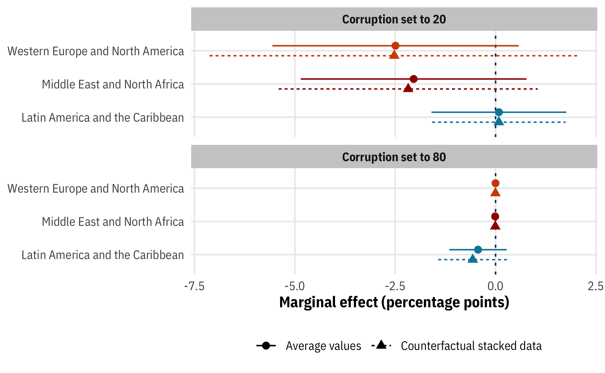
In this case there are no huge differences 🤷. BUT STILL this is really neat!
Categorical contrasts as statistical/marginal effects
Confusingly, people sometimes also use the term “marginal effect” to talk about group averages or predicted values (I myself am guilty of this!). Technically speaking, a marginal effect is only a partial derivative, or a slope—not a predicted value or a difference in group means.
But regression lends itself well to group means, and predictions and fitted values are fundamental to calculating instantaneous slopes, so both marginaleffects and emmeans are used for adjusted predictions and marginal means and contrasts. They also use different approaches for calculating these averages, either averaging before putting values in the model (emmeans) or averaging after (marginaleffects’s default setting).
We’ve already seen two different functions for generating predictions when we plotted the predicted probabilities of having a disclosure law for each region: marginaleffects::predictions() and emmeans::emmeans().
I won’t go into a ton of detail here about the differences between the two approaches to predictions and contrasts, mostly because pretty much everything we’ve looked at so far applies to both. Instead, you should look at Vincent’s excellent vignettes for marginalmeans:
And the equally excellent vignettes for emmeans:
You should also check out this Twitter thread tutorial by Alex Hayes on categorical contrasts and means—it’s a fantastic illustration of this same process.
In general, the two packages follow the same overall approach that we’ve seen with marginaleffects() and emtrends():
- Prediction and contrast functions in marginaleffects try to calculate predictions and averages for each row, then collapses them to single average values (either globally or for specific groups). This approach is AME-flavored (though marginaleffects can also do MEM-flavored operations and average first).
- Prediction and contrast functions in emmeans collapse values into averages first, then feeds those average values into the model to generate average predictions and means (either globally or for specific groups). This approach is MEM-flavored.
tl;dr: Overall summary of all these marginal effects approaches
PHEW we just did a lot of marginal work. This is important stuff. Unless you’re working with a linear OLS model without any fancy extra things like interactions, polynomials, logs, and so on, don’t try to talk about marginal effects based on just the output of a regression table—it’s not possible unless you do a lot of manual math!
Both marginaleffects and emmeans provide all sorts of neat and powerful ways to calculate marginal effects without needing to resort to calculus, but as we’ve seen here, there are some subtle and extremely important differences in how they calculate their different effects.
The main takeaway from this whole post is this: If you take the average before plugging values into the model, you compute average marginal effects for a combination of covariates that might not actually exist in reality. If you take the average after plugging values into the model, each original observation reflects combinations of covariates that definitely exist in reality, so the average marginal effect reflects that reality.
To remember all these differences, here’s a table summarizing all their different approaches:
| Type | Process | marginaleffects | emmeans |
|---|---|---|---|
| Average marginal effects (AME) | Generate predictions for each row of the original data, then collapse to averages | |
Not supported |
| Group average marginal effects (G-AME) | Generate predictions for each row of the original data, then collapse to grouped averages | |
Not supported |
| Marginal effects at the mean (MEM) | Collapse data to averages, then generate predictions using those averages | |
|
| Marginal effects at user-specified or representative values (MER) | Create a grid of specific and average or typical values, then generate predictions | |
|
| Average marginal effects at counterfactual user-specified values | Create multiple copies of the original data with some columns set to specific values, then generate predictions for each row of each copy of the original data, then collapse to averages | |
Not supported |
And here’s an image with all five of the diagrams at the same time:
You can download PDF, SVG, and PNG versions of the marginal effects diagrams in this guide, as well as the original Adobe Illustrator file, here:
Do whatever you want with them! They’re licensed under Creative Commons Attribution-ShareAlike (BY-SA 4.0).
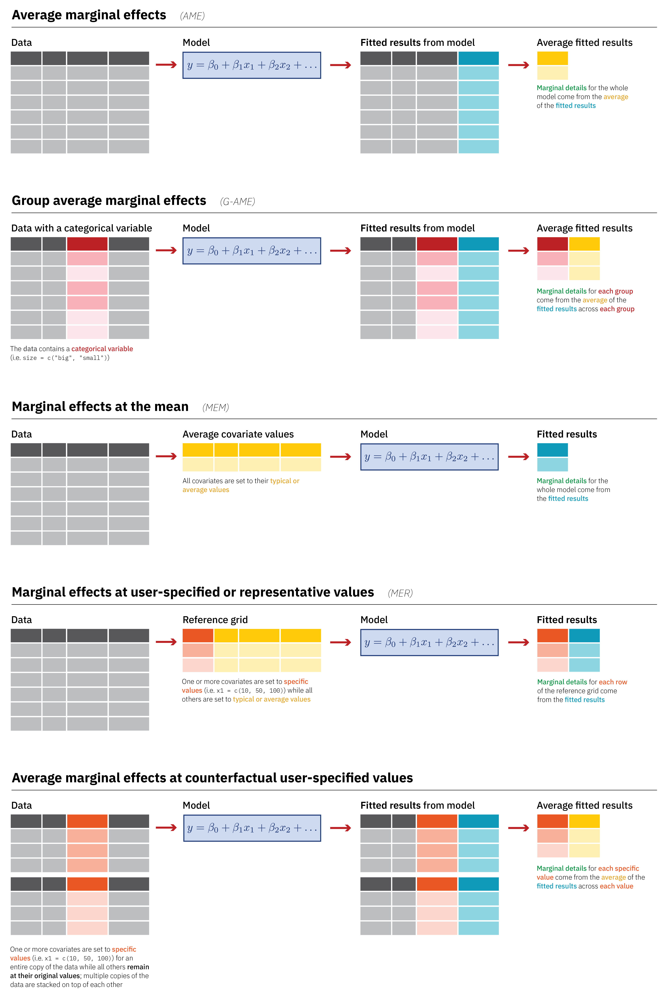
Which approach is best?
Who even knows.
Both kinds of averaging approaches are pretty widespread. The tidymodels ecosystem encourages the use of modelr::data_grid() and plugging various combinations of specific and typical variables into models to look at slopes and group contrasts. That’s marginal effects at the mean (MEM) and marginal effects at representative values (MER), which both use average values before putting them in model. And it’s fine—tidymodels is used in data science production pipelines around the world.
emmeans is also incredibly popular in data science and academia. I use it in a few of my blog post guides (like this one where I talk about average marginal effects the whole time even though technically none of the effects there are true AMEs—they’re all MEMs!). emmeans just calculates MEMs and MERs.
The idea of average marginal effects (AMEs)—calculating averages after plugging values into models—is incredibly popular in the social sciences. marginaleffects, its predecessor margins, and its Stata counterpart margins are all used in research in political science, public policy, economics, and other fields.
I’m sure there are super smart people in the world who know when AMEs or MEMs are most appropriate (like this article here!), and people who have even better and robust ways to account for the typicalness and/or uncertainty of the original data (see here for an averaging approach using a Bayesian bootstrap, for instance), but I’m not one of those super smart people.